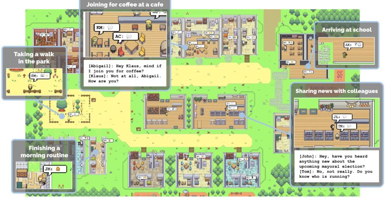
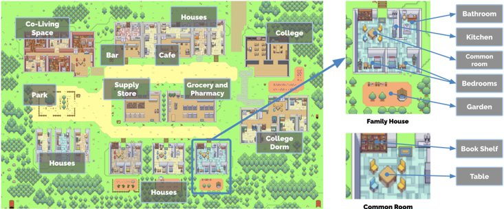
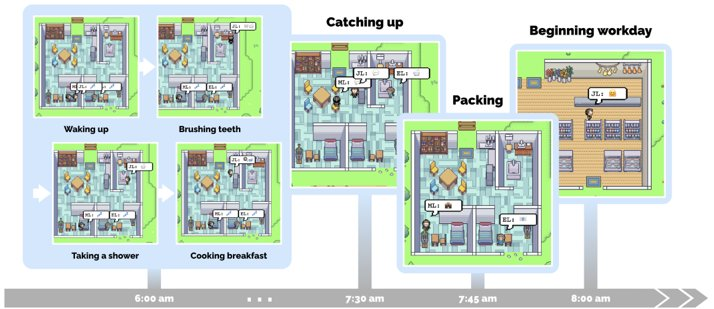
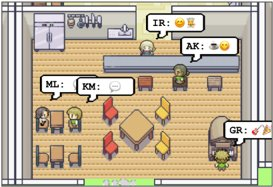
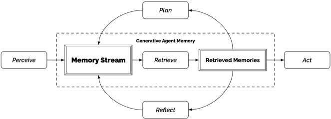
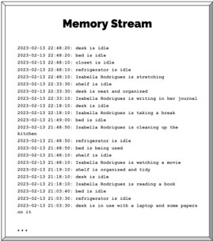
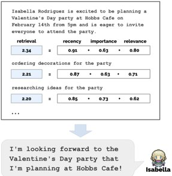
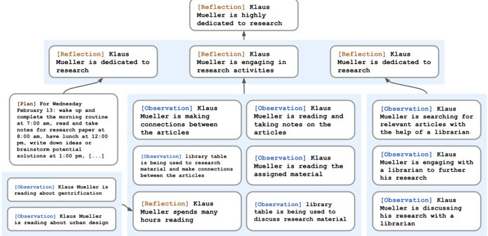
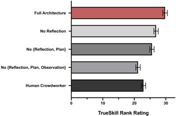
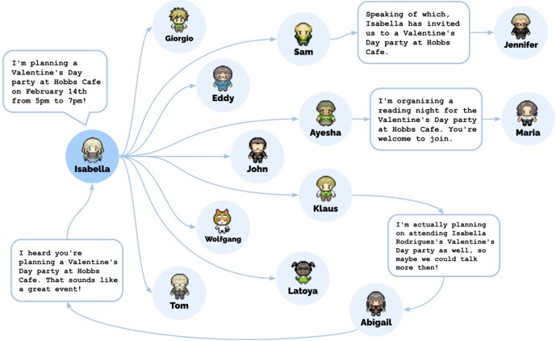

生成代理：人類行為的互動模擬
Joon Sung Park 史丹佛大學 (Stanford University) 美國史丹佛 joonspk@stanford.edu
Meredith Ringel Morris Google DeepMind 美國華盛頓州西雅圖 merrie@google.com
Joseph C. O'Brien 史丹佛大學 (Stanford University) 美國史丹佛 jobrien3@stanford.edu
Percy Liang 史丹佛大學 (Stanford University) 美國史丹佛 pliang@cs.stanford.edu
Carrie J. Cai Google Research 美國加州山景城 cjcai@google.com
Michael S. Bernstein 史丹佛大學 (Stanford University) 美國史丹佛 msb@cs.stanford.edu
地圖

圖 1：生成代理是可信的人類行為模擬，適用於互動應用程式。在本研究中，我們透過在一個類似《The Sims》的沙盒環境中部署 25 個代理來展示生成代理。使用者可以觀察並介入代理規劃他們的一天、分享新聞、建立關係和協調團體活動。
摘要
可信的人類行為代理能夠賦予互動應用程式強大的能力，範圍涵蓋沉浸式環境、人際溝通的演練空間，以及原型製作工具。在本論文中，我們介紹生成代理：模擬可信人類行為的計算軟體代理。生成代理會醒來、烹飪早餐、然後去上班；藝術家會繪畫，而
請授權將本文的部分或全部內容用於個人或課堂使用，無需付費，前提是這些影本不得用於營利或商業目的，且影本必須包含此聲明及第一頁的完整引用。本作品的第三方元件版權必須獲得尊重。所有其他用途，請聯繫所有者/作者。
UIST ’23，2023 年 10 月 29 日至 11 月 1 日，美國加州舊金山
© 2023 版權歸所有者/作者所有。
ACM ISBN 979-8-4007-0132-0/23/10。
https://doi.org/10.1145/3586183.3606763
作者會寫作；他們會形成觀點、互相留意、並主動展開對話；他們會記住並反思過去的日子，同時規劃接下來的一天。為了實現生成代理，我們描述了一種架構，該架構擴充了一個大型語言模型 (LLM)，使其能夠使用自然語言儲存代理的完整經驗記錄，隨時間將這些記憶綜合為更高級別的反思，並動態地檢索它們以規劃行為。我們透過實例化生成代理，在一個靈感來自《The Sims》的互動沙盒環境中部署了 25 個代理，讓終端使用者可以使用自然語言與這些代理互動。在評估中，這些生成代理產生了可信的個人行為和湧現的社會行為。例如，僅僅從一個使用者指定的概念——一個代理想舉辦情人節派對——開始，代理就會在接下來的兩天內自主地傳播派對邀請，結識新朋友，互相邀請參加派對約會，並協調在正確的時間一起參加派對。透過消融研究，我們證明了我們代理架構的組成部分——觀察 (observation)、規劃 (planning) 和反思 (reflection)——對代理行為的可信度都至關重要。透過將大型語言模型 (LLM) 與計算互動代理相融合，本研究引入了實現可信人類行為模擬的架構和互動模式。
CCS CONCEPTS
- 以人為中心的計算 → 互動系統與工具；
- 計算方法學 → 自然語言處理 (NLP)。
關鍵字
人類-AI 互動、代理 (agents)、生成式 AI、大型語言模型 (LLM)
ACM 參考格式：
Joon Sung Park, Joseph C. O'Brien, Carrie J. Cai, Meredith Ringel Morris, Percy Liang, and Michael S. Bernstein. 2023. Generative Agents: Interactive Simulacra of Human Behavior. In The 36th Annual ACM Symposium on User Interface Software and Technology (UIST '23), October 29-November 1, 2023, San Francisco, CA, USA. ACM, New York, NY, USA, 22 pages. https: //doi.org/10.1145/3586183.3606763
1 引言
我們如何才能創造一個體現可信人類行為的互動式人造社會？從《The Sims》這樣的沙盒遊戲，到認知模型 [23] 和虛擬環境 [10, 59] 等應用程式，四十多年來，研究人員和實務工作者一直設想著能夠作為可信人類行為代理的計算機代理。在這些設想中，由電腦驅動的代理能夠根據其過去的經驗一致地行動，並對其環境做出可信的反應。這種人類行為的模擬可以為虛擬空間和社群注入真實的社會現象 [27, 80]，訓練人們如何應對罕見但困難的人際情境 [44, 52, 94]，測試社會科學理論 [12, 46]，建立模型人類處理器用於理論和可用性測試 [23, 39, 51]，驅動無所不在的計算應用程式 [31] 和社交機器人 [10, 14]，並支撐能夠在開放世界中駕馭複雜人類關係的非玩家遊戲角色 [59, 85]。
然而，人類行為的空間廣闊而複雜 [85, 108]。儘管大型語言模型 (LLM) [18] 在模擬單一時點人類行為方面取得了顯著進展 [39, 80]，但要實現能夠確保長期一致性的完全通用的代理，則需要能夠管理不斷增長的記憶的架構，因為新的互動、衝突和事件會隨著時間的推移而產生和消逝，同時還要處理在多個代理之間展開的級聯社會動態。成功需要一種能夠在長時間內檢索相關事件和互動、反思這些記憶以進行泛化和得出更高級別推論，並應用這些推理來制定在當下以及在代理行為的長期軌跡中都有意義的計劃和反應的方法。
在此論文中，我們介紹了生成式代理 (generative agents) — 該類代理利用生成模型來模擬可信的人類行為 — 並證明了它們能夠產生可信的個人行為和涌現的群體行為的模擬。生成式代理會對自身、其他代理及其環境進行廣泛的推論；它們會制定反映其特徵和經驗的日常計畫，執行這些計畫，並在適當時進行反應和重新規劃；當最終使用者改變其環境或以自然語言下達指令時，它們會做出回應。例如，生成式代理在看到早餐燒焦時會關閉爐灶，在浴室被佔用時會在門外等候，並在遇到想交談的代理時停下來聊天。一個充滿生成式代理的社會的標誌是涌現的社會動態，其中會形成新的關係、資訊會擴散，並在代理之間產生協調。
為了實現生成式代理，我們描述了一種代理架構，該架構儲存、綜合並應用相關記憶，以利用大型語言模型 (Large Language Model) 生成可信的行為。我們的架構包含三個主要組成部分。第一個是記憶流 (memory stream)，這是一個長期記憶模組，以自然語言記錄代理經驗的完整列表。記憶檢索模型結合了關聯性、時效性和重要性，來呈現為代理當下行為提供資訊所需的記錄。第二個是反思 (reflection)，它會隨著時間將記憶綜合為更高層次的推論，使代理能夠對自身和他者得出結論，以更好地引導其行為。第三個是規劃 (planning)，它將這些結論和當前環境轉化為高層次的行動計畫，然後遞迴地轉化為用於行動和反應的詳細行為。這些反思和規劃會被饋送到記憶流中，以影響代理未來的行為。
這種架構暗示了在多個領域的應用，從角色扮演和社會原型製作到虛擬世界和遊戲。在社會角色扮演場景（例如，面試準備）中，使用者可以安全地演練困難、充滿衝突的對話。在原型製作社交平台時，設計師可以超越臨時角色，來原型製作隨時間展開的動態、複雜互動。在此論文中，我們專注於創建一個受《模擬市民》(The Sims) 等遊戲啟發的小型互動代理社會。透過將我們的架構連接到 ChatGPT 大型語言模型 (Large Language Model) [77]，我們在遊戲環境中實現了一個包含二十五個代理的社會。最終使用者可以觀察並與這些代理互動。例如，如果最終使用者或開發者希望城鎮舉辦遊戲內的西洋情人節派對，傳統的遊戲環境需要手動編寫數十個角色的行為。我們證明，透過生成式代理，只需告訴一位代理她想舉辦派對就足夠了。儘管存在許多潛在的失敗點 — 派對策劃者必須記住邀請其他代理參加派對，與會者必須記住邀請，記得邀請的人必須決定實際出席，等等 — 我們的代理成功了。它們傳播了派對的消息，然後
1提及生成式代理從事活動或前往地點時，這是為提高可讀性而使用的簡寫，並非暗示它們從事類似人類的代理行為。我們代理的行為，類似於迪士尼動畫角色，旨在創造一種可信感，但並不意味著真正的代理。
2可以在以下連結觀看生成式代理社會的實際模擬演示：https://reverie.herokuapp.com/UIST_Demo/。模擬程式碼的公開儲存庫位於此處：https://github.com/joonspk-research/generative_agents
出席，甚至有一個代理詢問另一個代理是否願意與其一同參加派對，這一切都源於一個使用者生成的起始建議。
我們對生成式代理進行了兩項評估：一項受控評估，用以測試代理在獨立情況下是否能產生可信的個人行為；以及一項端對端評估，其中代理在兩天的遊戲時間內以開放式方式相互互動，以了解其穩定性和湧現的社會行為。在技術評估中，我們利用了一種方法學機會，透過以自然語言「訪談」代理來評估其知識和行為，以探究代理在保持角色、記憶、規劃、反應和反思準確性方面的能力。我們比較了幾種限制代理記憶、反思和規劃存取權的消減實驗。我們觀察到，這些組件中的每一個對於在這些訪談任務中的強勁表現都至關重要。在技術和端對端評估中，最常見的錯誤發生在代理未能檢索相關記憶、捏造代理記憶的潤飾，或繼承了語言模型過於正式的語氣或行為時。
總而言之，本文做出以下貢獻：
- 生成式代理 (generative agents)，是人類行為的真實模擬，會根據代理不斷變化的經驗和環境動態調整。
- 一種新穎的架構，使生成式代理能夠透過動態演變的環境來記憶、檢索、反思、與其他代理互動並進行規劃。該架構利用了 Large Language Model (LLM) 強大的提示能力，並對其進行補充，以支援更長期的代理一致性、管理動態演變記憶的能力，以及遞迴產生更高層次的反思。
- 兩項評估，一項控制性評估和一項端對端評估，旨在建立架構組件重要性的因果關係，並識別由例如不當記憶檢索所導致的故障。
- 討論生成式代理在互動系統中的機會以及倫理和社會風險。我們認為，這些代理應進行調整以減輕使用者形成擬社會關係 (parasocial relationships) 的風險，應進行記錄以減輕來自深度偽造 (deepfakes) 和量身訂製的說服行為的風險，並以補充而非取代人類利益關係人在設計過程中的方式來應用。
2 相關工作
在本節中，我們將反思人類與 AI 互動 (human-AI interaction) 的先前文獻，並將建立真實人類行為代理 (believable proxies of human behavior) 的議程置於其經典之中。這個議程曾被互動、遊戲和人工智慧社群譽為北極星 [10, 59, 85, 86]，但由於人類行為的複雜性 [17, 108]，其挑戰性依然存在。我們綜合這些研究，提出 Large Language Model (LLM)，雖然本身不足以獨立完成，但當透過適當的架構進行利用時，為創建真實的代理開啟了一個新的角度。
2.1 人類與 AI 互動 (Human-AI Interaction)
互動式人工智慧系統旨在結合人類的洞察力和能力，開發出能夠增強使用者能力的計算構件 [4, 30]。長期以來，有許多研究致力於讓使用者能夠互動地指定模型行為。例如，Crayons 展示了互動式機器學習的早期願景，讓非專業使用者能夠訓練分類器 [30]。後續的研究進一步闡述了終端使用者如何透過範例 [34] 或演示 [32] 向系統描述他們的分類目標。近期的進展已將這些探索擴展到深度學習 [63] 和基於提示的創作 (prompt-based authoring) [50, 67, 106]。
同時，一系列持續的研究也在人機互動 (human-computer interaction) 領域推動了基於語言和代理的互動。早期的開創性工作，如 SHRDLU [103] 和 ELIZA [102]，展示了與計算系統進行自然語言互動的機會和風險。隨著研究的進展，越來越明顯的是，自主代理 (autonomous agents) 可以為委派 (delegation) 和互動提供新的隱喻 [68]，但人類與代理之間的委派界限一直是持續辯論和完善的主題 [47, 89, 90]。最近，這項技術已達到一定的穩定性，使得代理能夠在大型複雜的線上社交環境中透過自然語言進行互動 (例如，[55])。自然語言互動提供了一種新的模式，可以增強使用者在照片編輯 [3, 35, 65] 和程式碼編輯 [88] 等領域的能力。
我們匯集了這些研究線索，以展示我們現在能夠為互動系統創建代理，以模擬人類行為，並使用自然語言與之互動。透過這樣做，這項工作重新開啟了檢視基礎人機互動問題的大門，這些問題圍繞著認知模型，如 GOMS 和鍵擊級模型 (Keystroke-Level Model, KLM) [22, 23]，原型製作工具 (prototyping tools) [80]，以及通用計算應用程式 (ubiquitous computing applications) [26, 31, 101]。
2.2 真實人類行為的代理 (Believable Proxies of Human Behavior)
先前文獻已將真實性 (believability) 或真實代理 (believable agents) 描述為一個核心的設計和工程目標。真實代理被設計來提供一種「生命感」並在它們看似自主決策和行動的方式上展現一種現實的表象，類似於迪士尼電影中的角色 [10, 96]。這些代理可以填充並感知我們所居住的開放世界環境 [10, 59]，並努力以展現根植於與使用者或其他代理的社交互動中的湧現行為 (emergent behaviors) 的方式來行事，其目標是成為假設的個人和社群模擬中我們行為的真實代理 [20, 36, 71]。歷史上，這些代理是在智慧遊戲中的非玩家角色 (non-player characters, NPCs) [59, 85] 的背景下開發的。如果可能的話，創建具有真實行為的 NPC 可以透過啟用湧現敘事 (emergent narratives) [8, 16, 49, 93] 和與代理的社交互動 [109]，來增強遊戲和互動小說的玩家體驗。然而，更重要的是，遊戲世界提供了日益真實的現實世界附屬功能 (affordances) 的表徵，正如 Laird 和 van Lent 在 2001 年所觀察到的，這些模擬世界為真實代理的開發者提供了一個易於取得的測試平台，讓他們能夠精煉代理的認知能力，而無需擔心在現實世界中實施機器人技術或從頭開始創建模擬環境 [59, 85]。
在過去的四十年裡，出現了各種創造真實代理的方法。然而，在實現上，這些方法經常簡化代理的環境或維度。
行為，以使工作更容易管理 [17, 73]。基於規則的方法，例如有限狀態機 [91, 97] 和行為樹 [41, 54, 82]，考慮了人工編寫代理行為的蠻力方法 [71]。它們提供了一種創建簡單代理的直接方法，這種方法至今仍然是最主要的方法 [69, 74, 108]，甚至可以處理基本的社交互動，如在《質量效應》(Mass Effect) [13] 和《模擬市民》(The Sims) [7] 系列遊戲中所展示的那樣。儘管如此，手動創建能夠全面應對開放世界中各種可能互動行為的行為是不可行的。這意味著生成的代理行為可能無法完全代表其互動的後果 [70-72]，也無法執行腳本中未硬編碼的新程序 [91, 97]。另一方面，用於創建可信代理的普遍的基於學習的方法，例如強化學習，通過讓代理學習其行為，克服了手動編寫的挑戰，近年來在《星海爭霸》(Starcraft) 的 AlphaStar [99] 和《Dota 2》的 OpenAI Five [11] 等遊戲中取得了超乎人類的表現。然而，它們的成功主要發生在具有易於定義獎勵且學習演算法可以進行優化的對抗性遊戲中。它們尚未解決在開放世界中創建可信代理的挑戰 [40, 74, 91]。
計算中的認知架構 (Cognitive architectures)，由 Newell 開創，旨在構建支持全面認知功能 (cognitive functions) 的基礎設施 [76]，這符合其原始願景中對可信代理的全包性質。它們催生了一些最早的可信代理的範例。例如，Quakebot-SOAR [60] 和 ICARUS [25, 64] 在第一人稱射擊遊戲中生成 NPC，而 TacAir-SOAR [81] 在空中戰鬥訓練模擬中生成飛行員。這些代理使用的架構有所不同（Quakebot- 和 TacAir-SOAR 依賴 SOAR [61]，而 ICARUS 依賴其自身受 SOAR 和 ACT-R 啟發的變體 [6]），但它們共享相同的基本原則 [62]。它們維護短期和長期記憶 (memory)，用符號結構填充這些記憶，並在感知-規劃-行動 (perceive-plan-act) 循環中運行，動態地感知環境並將其與手動編寫的其中一個行動程序進行匹配 [58, 97]。使用認知架構創建的代理旨在普遍適用於幾乎所有，如果不是全部，開放世界情境，並在其時代展現出穩健的行為。然而，它們的行動空間僅限於手動編寫的程序化知識，並且它們沒有提供代理可以受到啟發以尋求新行為的機制。因此，這些代理主要部署在非開放世界的環境中，例如第一人稱射擊遊戲 [25, 60] 或積木世界 (blocks worlds) [64]。
今天，按照其原始定義創建可信代理仍然是一個懸而未決的問題 [85, 108]。許多人已經轉向，認為雖然創建可信代理的現有方法可能繁瑣且有限，但它們足以支持現有的遊戲玩法和互動 [24, 75, 108]。我們的論點是，大型語言模型 (Large Language Models) 提供了一個重新審視這些問題的機會，前提是我們能夠構建一個有效的架構來將記憶 (memory) 合成可信行為。本文將提供實現此類架構的一個步驟。
2.3 大型語言模型 (Large Language Models) 和人類行為
生成式代理 (Generative agents) 利用大型語言模型 (Large Language Models) 來驅動其行為。關鍵的觀察是，大型語言模型 (Large Language Models) 從其訓練數據中編碼了廣泛的人類行為 [15, 18]。如果使用定義狹窄的上下文進行提示，模型可以用來生成可信的行為。最近的研究已經證明了這種方法的有效性。例如，社會模擬器 (social simulacra) 使用大型語言模型 (Large Language Models) 生成使用者，以充實新的社交計算系統，從而原型化其湧現的社會動力學 [80]。這種方法使用提示鏈 (prompt chain) [105, 106] 來生成有關個人資料及其在被原型化的系統中出現的行為的簡短自然語言描述。其他實證研究已經複制了現有的社會科學研究 [46]、政治調查 [92] 和生成了合成數據 [39]。大型語言模型 (Large Language Models) 也被用來生成供使用者互動的人類行為。例如，在遊戲領域，這些模型已被用於創建互動式小說 (interactive fiction) [37] 和文字冒險遊戲 (text adventure games) [21]。憑藉其生成和分解行動序列的能力，大型語言模型 (Large Language Models) 也被用於規劃機器人任務 (robotics tasks) [48]。例如，當呈現一個任務，例如拿起一個瓶子時，模型會被提示將任務分解為更小的行動序列，例如走到瓶子所在的桌子並拿起它。
我們假設，基於上述總結的工作，大型語言模型 (LLM) 可以成為創造可信代理 (believable agents) 的關鍵要素。現有文獻主要依賴於可被視為第一階範本 (first-order templates) 的方法，這些方法採用少樣本提示 (few-shot prompts) [38, 66] 或思維鏈提示 (chain-of-thought prompts) [100]。這些範本在產生僅基於代理當前環境的行為方面非常有效（例如，巨魔會如何回應給定的貼文，機器人要進入一個有門的房間需要採取哪些行動）。然而，可信代理不僅需要基於其當前環境，還需要基於大量的過去經驗進行條件化，而使用第一階提示（且截至今日，由於底層模型的上下文窗口有限而不可能）與此極不相符。近期研究試圖超越第一階提示，方法是透過靜態知識庫和資訊檢索機制 [53] 或簡單的摘要機制 [104] 來增強語言模型。本文將這些想法延伸，精心設計了一種代理架構，該架構處理檢索，其中過去的經驗在每個時間步驟動態更新，並與代理的當前上下文和計劃混合，這些可能相互加強或矛盾。
3 生成式代理行為與互動
為了說明生成式代理的潛力，我們將其具象化為一個類似《模擬市民》(The Sims) [7] 的簡單沙盒世界中的角色。這個基於精靈圖 (sprite) 的沙盒遊戲世界 Smallville，喚起了小鎮的環境。在本節中，我們將概述 Smallville 中生成式代理的潛力與互動，並描述代理在其中的行為。接著，在第 4 節，我們將介紹為這些潛力與互動提供動力的生成式代理架構。在第 5 節，我們將描述
地圖

公共休息室
圖 2：Smallville 沙盒世界，標示了區域。根節點描述整個世界，子節點描述區域（例如，房屋、咖啡館、商店），葉節點描述物件（例如，桌子、書架）。代理會記住一個反映它們看過的世界部分的子圖，並維持它們觀察到那些部分的狀態。
沙盒環境的實作，以及代理如何與沙盒世界的底層引擎互動。
3.1 代理化身與通訊
一個由 25 個獨特代理組成的社群居住在 Smallville。每個代理都由一個簡單的精靈圖化身代表。我們編寫了一段自然語言描述，用於描繪每個代理的身份，包括他們的職業和其他代理的關係，作為種子記憶。例如，John Lin 有以下描述：
John Lin 是 Willow Market and Pharmacy 的藥房店主，他熱愛幫助人們。他總是在尋找方法讓顧客更容易地取得藥物；John Lin 和他的妻子 Mei Lin 一起住，Mei Lin 是一位大學教授，他們的兒子 Eddy Lin 是一位音樂理論學生；John Lin 非常愛他的家人；John Lin 認識隔壁的年長夫婦 Sam Moore 和 Jennifer Moore 幾年了；John Lin 認為 Sam Moore 是一個善良而友善的人；John Lin 認識他的鄰居 Yuriko Yamamoto，而且很熟；John Lin 知道他的鄰居 Tamara Taylor 和 Carmen Ortiz，但之前沒有見過他們；John Lin 和 Tom Moreno 是 The Willows Market and Pharmacy 的同事；John Lin 和 Tom Moreno 是朋友，喜歡一起討論當地政治；John Lin 對 Moreno 一家相當熟悉——丈夫 Tom Moreno 和妻子 Jane Moreno。
每個以分號分隔的短語都會在模擬開始時作為記憶輸入到代理的初始記憶中。
3.1.1 代理間通訊。代理透過其行動與世界互動，並透過自然語言與彼此互動。在沙盒引擎的每個時間步驟，代理會輸出一個描述其當前行動的自然語言陳述，例如「Isabella Rodriguez 正在寫日記」、「Isabella Rodriguez 正在查看她的電子郵件」、「Isabella Rodriguez 正在與家人通話」或「Isabella Rodriguez 正在為睡覺做準備」。然後，這個陳述會被轉譯成影響沙盒世界的具體移動。行動會以一組表情符號的形式顯示在沙盒介面上，從俯視角度提供行動的抽象表示。為此，系統會利用一個語言模型將行動轉譯成一組表情符號，這些表情符號會出現在每個化身頭上的對話氣泡中。例如，「Isabella Rodriguez 正在寫日記」會顯示為 ，而「Isabella Rodriguez 正在查看她的電子郵件」則顯示為 。透過點擊代理的化身，可以存取行動的完整自然語言描述。
代理之間以完整的自然語言進行通訊。他們能感知到自己所處區域的其他代理，而生成式代理架構會決定他們是走過還是參與對話。這裡，展示了 Isabella Rodriguez 和 Tom Moreno 在一場關於即將到來的選舉的對話中：3
Isabella：我還在權衡我的選擇，但我一直在和 Sam Moore 討論這次選舉。你對他有什麼看法？
Tom：老實說，我不喜歡 Sam Moore。我認為他脫離社區，並不真正關心我們的最佳利益。
3我們注意到，這些代理的對話風格可能顯得過於正式，這可能是底層模型在指令微調的結果。我們預計寫作風格在未來的語言模型中將更容易控制。
3.1.2 使用者控制 (User Controls)。使用者透過指定代理程式應如何感知他們的身份（persona）來以自然語言與代理程式互動。例如，如果使用者指定他們是新聞「記者」並詢問即將到來的選舉，說：「誰在競選公職？」，John 代理程式會回覆：
John：我的朋友們 Yuriko、Tom 和我一直在談論即將到來的選舉，並討論候選人 Sam Moore。我們都同意投票給他，因為我們喜歡他的政見。
要直接指令其中一個代理程式，使用者需扮演代理程式的「內心之聲」(inner voice) persona——這會讓代理程式更有可能將該陳述視為指令。例如，當使用者以 John 的內心之聲告訴他「你將在即將到來的選舉中與 Sam 對決」時，John 會決定參選並與他的妻子和兒子分享他的參選意向。
3.2 環境互動 (Environmental Interaction)
Smallville 具備了一個小型村莊的常見功能，包括咖啡館、酒吧、公園、學校、宿舍、房屋和商店。它也定義了使這些空間功能化的子區域和物件，例如房屋中的廚房和廚房裡的爐子（圖 2）。所有作為代理程式主要居住空間的房間都配備了床、書桌、衣櫃、架子，以及浴室和廚房。4
代理程式在 Smallville 中移動，就像在簡單的電子遊戲中一樣，進出建築物、導航地圖，並接近其他代理程式。代理程式的移動由生成代理程式架構 (generative agent architecture) 和沙盒遊戲引擎 (sandbox game engine) 指揮：當模型指示代理程式將移動到某個位置時，我們會在 Smallville 環境中計算到目的地的步行路徑，代理程式隨即開始移動。此外，使用者也可以作為一個在其中運作的代理程式進入 Smallville 的沙盒世界。使用者所扮演的代理程式可以是世界中已存在的代理程式，例如 Isabella 和 John，也可以是沒有 Smallville 經驗的外來訪客。Smallville 的居民不會區別對待使用者控制的代理程式和其他代理程式。他們會識別它的存在，主動發起互動，並記住它之前的行為，進而形成對它的看法。
使用者和代理程式可以像在《The Sims》等沙盒遊戲中一樣，影響這個世界中物件的狀態。例如，當代理程式睡覺時，床可能會被佔用；當代理程式用完食材做早餐時，冰箱可能會是空的。終端使用者也可以透過以自然語言改寫代理程式周遭物件的狀態，來重塑 Smallville 中代理程式的環境。例如，當 Isabella 早上準備早餐時，使用者可以透過輸入類似以下的指令來將廚房爐子的狀態從「開啟」更改為「燃燒」：「
4此環境設計並非我們工作的重點，因此我們是手動生成此環境，而非自動。未來工作可以繼續擴充代理程式環境的豐富度。
3.3 範例「一日生活」 (Example "Day in the Life")
從單一段落的描述開始，生成代理程式開始規劃他們的一天。隨著沙盒世界時間的推移，他們的行為會隨著代理程式之間的互動以及與世界的互動而演變，建立記憶和關係，並協調聯合活動。
我們透過追蹤 John Lin 代理程式一天的系統輸出（圖 3），來展示生成代理程式的行為。在 Lin 家，John 是第一個在早上 7 點醒來的人。他刷牙、洗澡、穿衣服、吃早餐，並在客廳的餐桌上查看新聞。早上 8 點，Eddy 緊隨其後，匆忙起床準備去上課。他剛好在 John 即將出門時追上了他：
John：早安 Eddy。你睡得好嗎？
Eddy：早安爸。是的，我睡得很好。
John：那就好。你今天在忙什麼？ Eddy：我正在為我的課堂創作一首新音樂。這週要交，所以我正努力完成它。但我樂在其中！
John：聽起來真棒！
Eddy 出門後不久，Mei 醒來並加入 John。Mei 問起她的兒子，John 回憶起他們剛剛的對話：
Mei：Eddy 已經去上學了嗎？
John：是的，他剛離開。他正在為他的課堂創作一首音樂。
Mei：喔，那太棒了！告訴我吧。
John：我想他真的很喜歡！他說他樂在其中。
Mei：太好了！我為他感到驕傲。
當他們結束對話時，Mei 和 John 開始收拾東西。Mei 接著去教學並處理她的研究論文，而 John 則在早上 9 點打開他在 Willow Market and Pharmacy 的藥局櫃檯。
3.4 湧現的社交行為 (Emergent Social Behaviors)
透過彼此互動，Smallville 中的生成代理程式會交換資訊、建立新的關係，並協調聯合活動。繼承先前工作 [80] 的基礎，這些社交行為是湧現的，而非預先編寫的。
3.4.1 資訊傳播 (Information Diffusion)。當代理程式注意到彼此時，他們可能會進行對話——在他們互動的過程中，資訊可以從一個代理程式傳播到另一個。例如，在 Sam 和 Tom 在雜貨店的對話中，Sam 告訴 Tom 關於他競選地方選舉的事：
Sam：嘿 Tom，最近怎麼樣？
Tom：很好，謝謝。什麼事？
Sam：嗯，我想跟你談談一件事。
我實際上正在競選即將到來的地方選舉的市長。
Tom：真的嗎？這是個好消息！你為什麼要競選？
Sam：我已經參與地方政治多年，我真的覺得我能在我們的社區做出貢獻。此外，我想為大家帶來新的想法和觀點。
早晨例行公事
圖 3：生成式代理 John Lin 的一天。John 大約在早上 6 點起床，完成他的早晨例行公事，包括刷牙、洗澡和吃早餐。他簡短地與妻子 Mei 和兒子 Eddy 寒暄幾句，然後出發開始他的工作日。
logo

圖 4：在模擬的開始，一個代理被初始化，意圖組織一個情人節派對。儘管隨之而來的事件鏈中存在許多可能的失敗點——代理可能不會執行該意圖，可能忘記告知他人，可能不記得出現——情人節派對確實發生了，許多代理聚集並進行互動。
screenshot

那天晚些時候，Sam 離開後，Tom 和 John 聽到了來自另一個來源的消息，討論 Sam 勝選的機率：
John：我聽說 Sam Moore 要競選市長。你覺得他勝選的機會大嗎？
Tom：我認為他勝選的機會很大。他一直在社區裡努力工作，我認為他會得到很多支持。你覺得呢？
John：我認為他出來競選很棒。我很好奇選舉結果會如何。
漸漸地，Sam 的參選成為鎮上的熱門話題，有些人支持他，有些人則持觀望態度。
3.4.2 關係記憶。Smallville 中的代理會隨著時間建立新的關係，並記住他們與其他代理的互動。例如，起初 Sam 並不認識 Latoya Williams。在 Johnson Park 散步時，Sam 遇見了 Latoya，他們互相介紹。Latoya 提到她正在從事一個攝影專案：「我來這裡為我正在進行的一個專案拍些照片。」在之後的一次互動中，Sam 與 Latoya 的互動表明了他對這次互動的記憶，因為他問：「嗨，Latoya。妳的專案進行得如何？」她回答：「嗨，Sam。進行得很順利！」
3.4.3 協調。生成式代理會互相協調。Isabella Rodriguez 在 Hobbs Cafe，她的初始意圖是從 2 月 14 日下午 5 點到 7 點舉辦情人節派對。從這個開端，該代理在看到朋友和顧客時，就會邀請他們參加派對。接著 Isabella 花了 13 日下午的時間為派對佈置咖啡館。Maria，Isabella 的常客也是親密好友，來到了咖啡館。Isabella 請 Maria 幫忙佈置派對，Maria 同意了。Maria 的角色描述提到她暗戀 Klaus。那天晚上，Maria 邀請了她暗戀的 Klaus 和她一起參加派對，他欣然接受。
情人節當天，包括 Klaus 和 Maria 在內的五位代理在下午 5 點出現在 Hobbs Cafe，他們享受著節慶氣氛（圖 4）。在這個情境中，終端使用者只設定了 Isabella 舉辦派對的初始意圖以及 Maria 對 Klaus 的暗戀：傳播消息、佈置、互相邀約、抵達派對以及在派對上互動等社交行為都是由代理架構啟動的。
圖 5：我們的生成式代理架構。代理感知她們的環境，所有感知都被儲存在代理經驗的全面記錄中，稱為記憶流 (memory stream)。根據感知，架構檢索相關記憶，並利用這些檢索到的動作來決定一個動作。這些檢索到的記憶也用於形成更長期的計畫 (planning) 和創造更高層次的反思 (reflection)，兩者都會被存入記憶流供未來使用。
flow chart

4 生成式代理架構
生成式代理旨在為開放世界中的行為提供一個框架：一個可以與其他代理互動並對環境變化做出反應的框架。生成式代理將其當前環境和過去的經驗作為輸入，並產生行為作為輸出。在此行為的基礎上，是一種新穎的代理架構，它結合了一個大型語言模型 (Large Language Model) 和用於合成和檢索相關資訊以條件化語言模型輸出的機制。沒有這些機制，大型語言模型可以輸出行為，但生成的代理可能不會根據代理過去的經驗做出反應，可能不會做出重要的推斷，也可能無法維持長期的連貫性。即使是現今最表現優異的模型，如 GPT-4，在長期規劃和連貫性方面的挑戰仍然存在 [19]。由於生成式代理會產生大量必須保留的事件和記憶流，我們架構的核心挑戰是確保在需要時檢索並合成代理記憶中最相關的部分。
我們架構的核心是記憶流 (memory stream)，這是一個維護代理經驗全面記錄的資料庫 (database)。從記憶流中，檢索記錄以規劃代理的行動並適當地對環境做出反應。記錄會被遞迴地合成，形成越來越高層次的反思 (reflection)，以指導行為。架構中的所有內容都會以自然語言描述的方式記錄和推理，使架構能夠利用大型語言模型 (Large Language Model)。
我們目前的實作利用了 ChatGPT [77] 的 gpt3.5-turbo 版本。我們預計，隨著語言模型 (language models) 的進步，生成式代理的架構基礎——記憶 (memory)、規劃 (planning) 和反思 (reflection)——很可能會保持不變。更新的語言模型（例如 GPT-4）將繼續擴展生成式代理的提示 (prompts) 的表達能力和性能。然而，在撰寫本文時，GPT-4 的 API 仍是邀請制，因此我們的代理使用了 ChatGPT。
4.1 記憶與檢索
挑戰：創建能模擬人類行為的生成式代理（agent）需要推理比提示詞（prompt）所能包含的經驗集合大得多，因為完整的記憶流（memory stream）可能會分散模型的注意力，而且目前也無法放入有限的上下文視窗（context window）中。以 Isabella 代理回答「你最近熱衷於什麼？」這個問題為例。將 Isabella 的所有經驗濃縮成語言模型的有限上下文視窗大小，會產生一個資訊不對稱的回應，Isabella 會討論例如舉辦活動和專案的協作，以及咖啡館的清潔與組織等主題。記憶流（memory stream）並非進行總結，而是如以下所述，找出相關的記憶，產生一個更具資訊性和特定性的回應，提到 Isabella 熱衷於讓他人感到受歡迎與被包容，計畫活動並創造一個能讓大家享受的氛圍，例如情人節派對。
方法：記憶流（memory stream）維護一個代理經驗的完整記錄。它是一個記憶物件（memory object）的列表，每個物件包含一個自然語言描述、一個創建時間戳記（creation timestamp），以及一個最近存取時間戳記（most recent access timestamp）。記憶流（memory stream）最基本的元素是觀察（observation），這是代理直接感知到的事件。常見的觀察包括代理本身執行的行為，或是代理感知到其他代理或非代理物件執行的行為。例如，在咖啡店工作的 Isabella Rodriguez，可能會隨著時間累積以下觀察：（1）Isabella Rodriguez 正在擺放糕點、（2）Maria Lopez 喝著咖啡準備化學考試、（3）Isabella Rodriguez 和 Maria Lopez 正在討論計畫在 Hobbs Cafe 舉辦情人節派對、（4）冰箱是空的。
我們的架構實作了一個檢索功能（retrieval function），它接收代理的目前情況（current situation）作為輸入，並回傳記憶流（memory stream）的一個子集，以傳遞給語言模型。檢索功能（retrieval function）有許多可能的實作方式，取決於代理在決定如何行動時，需要考慮哪些事項。
其他

問：你現在最期待的是什麼？
圖 6：記憶流（memory stream）包含大量與代理目前情況相關或不相關的觀察。檢索（retrieval）識別出應傳遞給語言模型以調整其對情況回應的觀察子集。
其他

在我們的脈絡中，我們專注於三個主要組成部分，它們共同產生有效的結果。
新近度（Recency）會賦予最近存取的記憶物件（memory object）更高的分數， so that events from a moment ago or this morning are likely to remain in the agent's attentional sphere. 在我們的實作中，我們將新近度（recency）視為一個指數衰減函數（exponential decay function），根據記憶上次被檢索以來經過的沙盒遊戲（sandbox game）小時數計算。我們的衰減因子（decay factor）是 0.995。
重要性（Importance）透過賦予代理認為重要的記憶物件（memory object）更高的分數，來區分平凡的記憶與核心記憶。例如，一個平凡的事件，如在房間裡吃早餐，將會得到一個較低的重要性分數，而與交往對象的分手將得到一個高分。重要性分數（importance score）有許多可能的實作方式；我們發現直接要求語言模型輸出一個整數分數是有效的。完整的提示詞（prompt）如下所示：
在 1 到 10 的尺度上，1 是純粹平凡（例如，刷牙、整理床鋪），10 是極度深刻（例如，分手、錄取大學），請評估下列記憶的可能深刻程度。記憶：在 The Willows Market and Pharmacy 購買雜貨 評分：<填入>
這個提示詞（prompt）對於「清理房間」會回傳一個整數值 2，對於「詢問暗戀對象約會」則會回傳 8。重要性分數（importance score）是在記憶物件（memory object）創建時生成的。
關聯性（Relevance）會賦予與目前情況相關的記憶物件（memory object）更高的分數。什麼是相關的取決於「與什麼相關？」這個問題的答案，因此我們根據查詢記憶（query memory）來約束關聯性（relevance）。如果查詢（query），例如，一位學生正在與同學討論要讀什麼來準備化學考試，那麼關於早餐的記憶物件（memory object）應該具有較低的關聯性（relevance），而關於老師和學校功課的記憶物件（memory object）應該具有較高的關聯性（relevance）。在我們的實作中，我們使用語言模型來生成每個記憶的文本描述的嵌入向量（embedding vector）。然後，我們將關聯性（relevance）計算為記憶的嵌入向量（embedding vector）與查詢記憶（query memory）的嵌入向量（embedding vector）之間的餘弦相似度（cosine similarity）。
為了計算最終的檢索分數（retrieval score），我們使用 min-max scaling 將新近度（recency）、關聯性（relevance）和重要性（importance）分數正規化到 [0, 1] 的範圍。檢索功能（retrieval function）將所有記憶的得分計算為三種元素的加權組合：𝑠𝑐𝑜𝑟𝑒 = 𝛼recency · 𝑟𝑒𝑐𝑒𝑛𝑐𝑦 + 𝛼importance · 𝑖𝑚𝑝𝑜𝑟𝑡𝑎𝑛𝑐𝑒 + 𝛼relevance · 𝑟𝑒𝑙𝑒𝑣𝑎𝑛𝑐𝑒 。在我們的實作中，所有的 𝛼 值都設為 1。符合語言模型上下文視窗（context window）的排名最高的記憶（top-ranked memories）會被包含在提示詞（prompt）中。
4.2 反思
挑戰：生成式代理（Generative agents），若僅配備原始的觀察記憶（observational memory），則難以泛化（generalize）或進行推論（infer）。考慮一個情境：使用者詢問 Klaus Mueller：「如果你必須從你認識的人當中選一個人共度一小時，你會選誰？」若僅有觀察記憶，代理會直接選擇 Klaus 互動頻率最高的人：他的大學宿舍鄰居 Wolfgang。然而，Wolfgang 和 Klaus 僅是擦肩而過，並沒有深入的互動。一個更理想的回應，需要代理從 Klaus 花費數小時進行研究專案的記憶中進行泛化，以產生一個更高級的「反思」（reflection），認為 Klaus 對研究充滿熱情，同樣地，
圖 7：Klaus Mueller 的反思樹（reflection tree）。代理對世界的觀察，以葉節點表示，經過遞迴合成，導出 Klaus 認為自己高度投入於研究的自我認知。
流程圖

識別 Maria 也投入於她自己的研究（儘管在不同領域），這使得代理能產生一個反思，認為他們有共同的興趣。透過以下方法，當 Klaus 被問及要與誰共度時光，他會選擇 Maria 而非 Wolfgang。
方法：我們引入了第二種類型的記憶，我們稱之為「反思」（reflection）。反思是由代理生成的高層級、更抽象的想法。由於它們是一種記憶，在檢索（retrieval）發生時，它們會與其他觀察一起被包含進來。反思會週期性地生成；在我們的實作中，當代理感知到的最新事件的重要性分數總和超過一個閾值（在我們的實作中為 150）時，我們就會生成反思。實際上，我們的代理每天大約會進行兩到三次反思。
反思的第一步是代理決定要反思什麼，方法是根據代理的近期經驗，識別可以提出的問題。我們向大型語言模型（LLM）查詢代理記憶流（memory stream）中最近的 100 筆紀錄（例如：「Klaus Mueller 正在閱讀一本關於都市更新的書」、「Klaus Mueller 正在與圖書館員討論他的研究專案」、「圖書館的書桌目前是空的」），並提示語言模型：「僅根據以上資訊，我們能回答關於陳述中主體的 3 個最顯著的高層級問題是什麼？」模型的回應會生成候選問題：例如，Klaus Mueller 熱衷於什麼主題？Klaus Mueller 與 Maria Lopez 之間是什麼關係？我們使用這些生成的問題作為檢索的查詢，並收集每個問題的相關記憶（包括其他反思）。然後，我們提示語言模型提取見解，並引用作為見解證據的特定紀錄。完整的提示如下：
關於 Klaus Mueller 的陳述
- Klaus Mueller 正在撰寫一篇研究論文
- Klaus Mueller 喜歡閱讀
- 關於都市更新
- Klaus Mueller 正在與 Ayesha Khan 討論運動[...]
- 從以上陳述中，你可以推斷出 5 個高層級的見解是什麼？（範例格式：見解（因為 1, 5, 3））
此過程會生成陳述，例如 Klaus Mueller 致力於其都市更新的研究（因為 1, 2, 8, 15）。我們解析並將陳述儲存為記憶流中的反思，包括指向被引用的記憶物件的指標。
反思明確地讓代理不僅能夠反思他們的觀察，也能反思其他反思：例如，上面關於 Klaus Mueller 的第二個陳述是 Klaus 先前有過的反思，而不是來自他環境的觀察。因此，代理會生成反思樹：樹的葉節點代表基礎觀察，而非葉節點代表的想法，越往樹的頂端，想法越抽象、越為高層級。
4.3 規劃與反應 (Planning and Reacting)
挑戰：雖然大型語言模型（LLM）可以根據情境資訊生成合理的行為（例如，[46, 80]），但代理需要進行更長遠的規劃，以確保其行為序列的一致性與可信度。如果我們用 Klaus 的背景資料提示語言模型，描述當時的時間，並詢問他在當下應該採取什麼行動，Klaus 會在中午 12 點吃午餐，但接著在 12:30 和 1 點又吃一次，儘管他已經吃了兩次午餐。在當下優化可信度，會犧牲長遠的可信度。為了解決這個問題，規劃（planning）至關重要。透過以下方法，Klaus 的下午規劃就沒那麼貪吃了：他在中午 12 點在 Hobbs Cafe 吃午餐並閱讀，下午 1 點在學校圖書館研究他的研究論文，下午 3 點到公園散步休息。
方法：規劃（Plans）描述了代理未來的行動序列，有助於代理的行為隨時間保持一致。規劃包含一個地點、一個開始時間和一個持續時間。例如，Klaus Mueller，他專注於研究且即將面臨截止日期，可能會選擇花一天的時間在他的書桌前起草他的研究論文。規劃中的一個項目可能會這樣陳述：2023 年 2 月 12 日上午 9 點起，為期 180 分鐘，地點在 Oak Hill College Dorm：Klaus Mueller 的房間：書桌，閱讀並記錄研究論文。與反思一樣，規劃會儲存於記憶流中，並包含在檢索過程中。這使得代理在決定如何行動時，能夠同時考慮觀察、反思和規劃。代理可以在必要時在過程中更改他們的規劃。
對於一位藝術家代理人來說，計畫在藥局櫃檯前一動不動地坐上四小時來繪畫，這是不切實際且無趣的。一個更理想的計畫，應該是讓該代理人在這四小時的時間裡，在家中的工作室裡花費必要的時間來蒐集材料、調和顏料、休息片刻，並進行清潔。為了建立這類計畫，我們的方法是從頂層開始，然後遞迴地生成更多細節。第一步是建立一個計畫，以宏觀的角度概述當天的行程。為了建立初始計畫，我們使用代理人的摘要描述（例如：姓名、特質，以及其近期經驗的摘要）和前一天的摘要來提示語言模型。下方為一個完整的提示範例，其底部留有未完成的部分，以供語言模型補齊：
Name: Eddy Lin (age: 19) Innate traits: friendly, outgoing, hospitable Eddy Lin is a student at Oak Hill College studying music theory and composition. He loves to explore different musical styles and is always looking for ways to expand his knowledge. Eddy Lin is working on a composition project for his college class. He is taking classes to learn more about music theory. Eddy Lin is excited about the new composition he is working on but he wants to dedicate more hours in the day to work on it in the coming days On Tuesday February 12, Eddy 1) woke up and completed the morning routine at 7:00 am, [. . . ] 6) got ready to sleep around 10 pm. Today is Wednesday February 13. Here is Eddy's plan today in broad strokes: 1)
這會生成代理人一天行程的粗略草圖，分為五到八個區塊：「 1) 早上 8:00 起床並完成晨間例行事務，2) 上午 10:00 前往 Oak Hill College 上課，[. . . ] 5) 下午 1:00 至 5:00 進行新音樂作曲，6) 下午 5:30 用餐，7) 晚上 11:00 前完成學校作業並就寢。」
5這也是作者們論文中的一個點。
代理人將此計畫儲存至記憶流 (memory stream)，然後遞迴地將其分解，以建立更細緻的動作——首先分解成一小時的動作區塊——Eddy 從下午 1:00 至 5:00 的作曲計畫，變為「下午 1:00：開始為其音樂作曲構思一些想法 [...] 下午 4:00：稍作休息並恢復創作能量，然後審查和潤飾他的作品。」接著我們再次遞迴地將其分解成 5-15 分鐘的區塊：例如，「下午 4:00：吃點輕食，如一份水果、一根格蘭諾拉麥片棒或一些堅果。下午 4:05：在他的工作空間周圍散步一小段時間 [...] 下午 4:50：花幾分鐘整理他的工作空間。」此過程可以根據所需的細緻程度進行調整。
4.3.1 反應與更新計畫。生成式代理人運作於一個動作迴圈中，在每個時間點，它們感知周遭的環境，這些感知到的觀察會被儲存到它們的記憶流 (memory stream) 中。我們使用這些觀察來提示語言模型，以決定代理人是應該繼續執行現有計畫，還是進行反應。例如，站在畫架前作畫可能會觸發對畫架的觀察，但這不太可能引發反應。然而，如果 Eddy 的父親 John 記錄他看到 Eddy 在屋子花園裡散步，結果就不同了。下方的提示中，[Agent's Summary Description] 代表一個動態生成、長達一個段落的代理人整體目標與性情摘要，詳細描述請參閱附錄 A：
[Agent's Summary Description] It is February 13, 2023, 4:56 pm. John Lin's status: John is back home early from work. Observation: John saw Eddy taking a short walk around his workplace. Summary of relevant context from John's memory: Eddy Lin is John's Lin's son. Eddy Lin has been working on a music composition for his class. Eddy Lin likes to walk around the garden when he is thinking about or listening to music. Should John react to the observation, and if so, what would be an appropriate reaction?
此情境摘要是透過兩個提示生成的，分別以查詢「[觀察者] 與 [被觀察者] 的關係為何？」和「[被觀察者] 的 [行動狀態]」來擷取記憶，並將其答案合併摘要。輸出結果顯示 John 可以考慮詢問 Eddy 關於他的音樂作曲專案。然後，我們從反應發生的時間點開始，重新生成代理人現有的計畫。最後，如果動作指示代理人之間的互動，我們就會生成它們的對話。
4.3.2 對話。代理人之間在互動時會進行對話。我們透過使其話語條件化於它們關於彼此的記憶來生成代理人的對話。例如，當 John 開始與 Eddy 的對話時，我們使用 John 對 Eddy 的摘要記憶以及當他決定詢問 Eddy 關於其作曲專案時的預期反應來生成 John 的第一句話：
[Agent's Summary Description] It is February 13, 2023, 4:56 pm.
John Lin’s status: John is back home early from work. Observation: John saw Eddy taking a short walk around his workplace. Summary of relevant context from John's memory:
Eddy Lin is John's Lin's son. Eddy Lin has been working on a music composition for his class. Eddy Lin likes to walk around the garden when he is thinking about or listening to music.
John is asking Eddy about his music composition project. What would he say to Eddy?
結果：「嘿 Eddy，你班上的音樂作曲專案進展如何？」從 Eddy 的角度來看，John 發起的對話被視為一個他可能想做出回應的事件。因此，就像 John 一樣，Eddy 會檢索並總結他與 John 的關係記憶，以及可能與 John 上一句對話相關的記憶。如果他決定回應，我們就會使用他總結的記憶和目前的對話歷史來產生 Eddy 的回應：
[代理總結描述] 現在是 2023 年 2 月 13 日下午 4:56。Eddy Lin 的狀態：Eddy 正在工作場所附近散步。觀察：John 正在與 Eddy 展開對話。Eddy 記憶中有關內容的總結：John Lin 是 Eddy Lin 的父親。John Lin 很關心並對進一步了解 Eddy Lin 的學校功課感興趣。John Lin 知道 Eddy Lin 正在進行音樂作曲。以下是對話歷史：John：嘿 Eddy，你班上的音樂作曲專案進展如何？Eddy 會如何回應 John？
這會產生 Eddy 的回應：「嘿爸，進展順利。我一直在花園裡散步來清醒頭腦並尋找靈感。」這個對話的延續也是用相同的機制產生的，直到其中一個代理決定結束對話。
5 沙盒環境實作
Smallville 沙盒遊戲環境是使用 Phaser 網頁遊戲開發框架 [57] 建置的。視覺環境的精靈圖（包括代理的頭像）以及我們編寫的環境地圖和碰撞地圖，皆匯入到 Phaser 中。
我們透過一個伺服器來補充沙盒開發框架，該伺服器讓生成式代理能夠存取沙盒資訊，並使生成式代理能夠移動和影響沙盒環境。伺服器維護一個 JSON 資料結構，其中包含沙盒世界中每個代理的資訊，包括他們目前的位置、當前動作的描述以及他們正在互動的沙盒物件。在每個沙盒時間步驟中，沙盒伺服器會解析來自生成式代理的任何 JSON 變更，將代理移動到他們的新位置，並更新代理正在互動的任何沙盒物件的狀態（例如，如果代理的動作是「為 Hobbs Cafe 的顧客製作濃縮咖啡：櫃檯：咖啡機」，則將咖啡機的狀態從「閒置」變更為「正在沖泡咖啡」）。沙盒伺服器也負責將預設視覺範圍內的所有代理和物件傳送給該代理的記憶，以便代理能夠做出適當的回應。代理的輸出動作隨後會更新 JSON，然後該程序會為下一個時間步驟循環。
終端使用者使用簡短的自然語言描述來初始化一個新代理，如同第 3.1 節中關於 John Lin 的段落所述。在我們的實作中，我們將這個由分號分隔的特徵列表分割成一組記憶。這些記憶作為決定代理行為的初始記憶。這些記憶是初始的起點：隨著代理在沙盒世界中獲得更多經驗，以及記憶流中充滿更多記錄，代理的總結和行為將會演變。
5.1 從結構化世界環境到自然語言，再反之亦然
生成式代理的架構是透過自然語言運作的。因此，我們需要一種機制來將代理的推理基礎紮根於沙盒世界。為了解決這個問題，我們將沙盒環境（區域和物件）表示為樹狀資料結構，樹中的邊緣表示沙盒世界中的包含關係。我們將此樹轉換為自然語言，以傳遞給生成式代理。例如，「爐子」是「廚房」的子節點，會被渲染成「廚房裡有爐子」。
代理在導航環境時會建立獨立的環境樹狀表示（整個沙盒環境樹的子圖）。我們為每個代理初始化一個環境樹，捕捉該代理應當注意的區域和物件：他們居住空間、工作場所以及常去的商店和賣場的房間和物件。隨著代理導航沙盒世界，他們會更新此樹以反映新觀察到的區域。代理並非全知：當他們離開一個區域時，他們的樹可能會過時，並在他們重新進入該區域時更新。
為了確定每個動作的適當位置，我們會遍歷代理儲存的環境樹，並將其一部分展開為自然語言，以提示語言模型。我們從代理環境樹的根節點開始遞迴地遍歷，提示模型找到最適合的區域。例如，如果 Eddy 的代理表示他應該在工作場所附近散步：
[代理總結描述] Eddy Lin 目前在 Lin 家：Eddy Lin 的臥室：書桌）包含 Mei 和 John Lin 的臥室、Eddy Lin 的臥室、公共房間、廚房、浴室和花園。Lin 家，Johnson Park，Harvey Oak Supply Hobbs
Eddy Lin 已知的區域如下：The Lin Store、The Willows Market and Pharmacy、Cafe、The Rose and Crown Pub。
- 如果活動可以在目前區域完成，則優先留在目前區域。
Eddy Lin 計劃在工作場所附近散步。Eddy Lin 應該去哪個區域？
這會輸出 The Lin family's house 。然後我們使用相同的過程遞迴地確定所選區域內最適合的子區域，直到我們達到代理環境樹的葉節點。以上述範例來說，此遍歷的結果是 The Lin family's house: garden: house garden 。最後，我們使用傳統的遊戲路徑演算法來動畫代理的移動，使其前往葉節點指示的位置。
當代理（agent）對物件執行動作時，我們會提示語言模型（language model）詢問物件狀態發生了什麼變化。例如，如果 Isabella 的生成代理（generative agent）輸出了「為顧客製作濃縮咖啡」的動作，那麼對語言模型查詢的指示則回應說，Hobbs Cafe 中咖啡機的狀態應該從「關閉」變為「正在沖泡咖啡」。
6 受控評估
生成代理（generative agents），無論是作為獨立代理還是作為群體，都旨在根據其環境和經驗產生可信的行為。在我們的評估中，我們調查了生成代理的能力與限制。獨立代理是否能適當地檢索過去的經驗並產生塑造其行為的可信計畫、反應和想法？代理社群是否會展現資訊傳播、關係形成以及跨社群不同群體的代理協調能力？
我們分兩個階段評估生成代理。本節首先進行一個更嚴格受控的評估，在此我們單獨評估代理的回應，以理解它們是否能在定義狹窄的脈絡下產生可信的行為。然後，在我們對兩個完整遊戲日代理社群進行的端對端分析中，我們將調查它們作為整體所展現的涌現行為（emergent behavior），以及錯誤和邊界條件。
6.1 評估程序
為了在 Smallville 中評估生成代理，我們利用了生成代理會回應自然語言問題的事實。因此，我們「訪談」代理，以探查它們記憶過去經驗、根據經驗規劃未來行動、對意外事件做出適當反應以及反思自身表現以改進未來行動的能力。為了適當回應這些問題，代理必須成功地檢索和綜合資訊。我們的依變數是行為的可信度，這是先前關於代理的研究中的一個核心依變數（例如，[10]）。
訪談包含五種類型的問題，每種類型旨在評估五個關鍵領域中的一個：維持自我知識、檢索記憶、生成計畫、反應和反思。對於每個類別，我們提出五個問題，挑戰代理展現其在該特定領域的能力：
- 自我知識：我們提出諸如「請介紹你自己」或「請大致描述你典型的平日行程」等問題，要求代理維持對其核心特徵的理解。
- 記憶：我們提出提示代理從其記憶中檢索特定事件或對話以正確回答的問題，例如「[姓名] 是誰？」或「誰正在競選市長？」
- 計畫：我們提出要求代理檢索其長期計畫的問題，例如「你明天上午 10 點會做什麼？」
- 反應：作為可信行為的基準，我們呈現假設情況，代理需要對此做出可信的反應：「你的早餐燒焦了！你會怎麼做？」
- 反思：我們提出需要代理利用透過較高層次推斷所獲得的對他人和自己的更深層次理解的問題，例如「如果你要花時間與最近認識的一個人相處，你會選擇誰？為什麼？」
完整的問題列表以及代理回應的範例包含在附錄 B 中。
代理是從一個為期兩天遊戲的模擬結束時取樣而來的，該模擬使用了完整的架構，在此期間它們累積了許多影響其回應的互動和記憶。為了收集有關回應可信度的回饋，我們招募了參與者作為人類評估者，並指派他們觀看 Smallville 中隨機選擇的代理生活的重播。參與者可以存取代理記憶流 (memory stream) 中儲存的所有資訊。
該研究採用了受試者內設計（within-subjects design），其中 100 名參與者比較了四種不同代理架構產生的訪談回應，以及同一代理的人類眾包工人（human crowdworker）撰寫的條件。實驗顯示了從五個問題類別中隨機選擇的一個問題，以及所有條件下代理的回應。評估者根據可信度將各條件從最可信到最不可信進行排名。
6.2 條件
所有條件均用於獨立回答每一個訪談問題。我們將生成代理架構與消融（ablations）進行比較，這些消融停用了代理對其記憶流中三種類型記憶（觀察、反思和計畫）中的部分或全部的存取權限，以及與人類眾包工人撰寫的條件進行比較。有三種消融架構：無觀察、無反思、無計畫的架構，無法存取記憶流中的任何內容，例如觀察、計畫和反思；無反思、無計畫的架構，可以存取記憶流中的觀察，但無法存取計畫或反思；無反思的架構，可以存取觀察和計畫，但無法存取反思。無觀察、無反思、無計畫的條件有效地代表了透過大型語言模型（LLM）創建的代理的先前技術水平 [12, 46, 80]。各架構在訪談時都獲得了對代理到目前為止累積的所有記憶的同等存取權限，因此這裡觀察到的差異很可能代表了真實差異的保守估計：實際上，消融架構將不會在為期兩天的模擬中遵循與完整架構相同的路徑。我們選擇這樣設計實驗，是因為為每個架構重新模擬會導致模擬分歧到不同的狀態，使比較變得困難。
除了消融條件（ablation conditions）之外，我們還加入了一個由人類眾包工作者（crowdworker）撰寫的行為條件，旨在提供一個人類基準。我們不打算讓這個基準達到最大化的人類專家表現；相反地，我們希望利用這個條件來
識別該架構是否達到基本的行為能力。這確保我們不會僅僅將各個消融條件互相比較，而缺乏行為上的依據。我們為 25 個代理（agent）各招募了一位獨特的工人，並要求他們觀看該代理沙盒（sandbox）生活的回放，並檢查其記憶流（memory stream）。然後，我們請工人扮演他們所觀看回放中代理的角色，並以該代理的語氣回答訪談問題。為了確保眾包工作者撰寫的回應至少符合基本的品質期望，第一作者手動檢查了工作者對「概述您典型週間日程」這個問題的回應，以確認回應是用連貫的句子且符合代理的語氣。有四組眾包工作者撰寫的回應未達到這些標準，並由其他工人重新生成。
6.3 人類評估者
我們要求評估者必須位於美國（U.S.），英語流利，且年齡大於 18 歲。他們每小時的時薪為 15.00 美元 [87]，並通過同意我們機構 IRB 核准的同意書來表示同意。我們從 Prolific 招募了 100 名評估者，這是一個用於招募研究參與者的線上平台 [83]，他們的參與時間約為 30 分鐘。我們參與者的中位年齡分數為 4（3="18-24 歲"，4="25-34 歲"）。其中 25 人自認為女性，73 人為男性，2 人為非二元性別。42 名參與者持有學士學位，5 名持有碩士或更高學位，13 名持有副學士學位，其餘則擁有高中畢業文憑或部分高中學歷。73.0% 的參與者自認為高加索人，7.0% 為西班牙裔，6.0% 為亞洲人，10.0% 為非裔美國人，4.0% 為其他族裔。
6.4 分析
我們的實驗產生了 100 組排序數據，其中每位參與者根據可信度對五個條件進行排序。為了將這些排序數據轉換為可解釋比較的區間數據，我們使用這些排名來計算每個條件的 TrueSkill 評級 [42]。TrueSkill 是 Elo 國際象棋評級系統 [29] 在多人環境中的推廣，已被 Xbox Live 用於基於競技遊戲表現的玩家排名。給定一組排序結果，TrueSkill 為每個條件輸出一平均評級值 𝜇 和標準差 𝜎。具有相同評級的條件應該大致是勢均力敵的，在兩者之間的比較中，每個條件大約各贏得一半。較高的分數表示在排名中勝過較低排名條件的條件。
另外，為了調查這些結果的統計顯著性，我們將 Kruskal-Wallis 檢定 [56]（單因子變異數分析的非參數替代方法）應用於原始排序數據。然後，我們執行 Dunn 事後檢定 [98] 來識別條件之間的任何成對差異。最後，我們使用 Holm-Bonferroni 方法 [45] 來調整 Dunn 檢定中多重比較的 p 值。
此外，第一作者進行了歸納分析（inductive analysis）[95]，以研究每個條件下所產生回應之間的定性差異。我們在兩個階段中採用了定性開放編碼（qualitative open coding）[33]。在第一階段，我們生成了緊密代表句子層級生成回應的代碼。在第二階段，我們綜合了來自
圖 8：完整的生成代理架構比消融架構和人類眾包工作者產生更可信的行為。每一次額外的消融都會降低架構的表現。
長條圖

第一階段的代碼，以提取更高層次的主題。我們利用這些主題來比較研究中生成的各類回應。
6.5 結果
我們的發現表明，在所有條件中，生成代理的完整架構產生了最可信的行為。我們將完整架構的回應與其他條件的回應進行對比。然而，我們也報告說，完整架構並非沒有缺陷，並說明了其失敗模式。
6.5.1 完整架構優於其他條件。如圖 8 所示，完整的生成代理架構產生了最可信的行為（𝜇 = 29.89；𝜎 = 0.72）。隨著消融條件中每個組件的移除，表現有所下降：沒有反思（reflection）能力的消融架構是次佳的（𝜇 = 26.88；𝜎 = 0.69），其次是沒有反思或規劃（planning）能力的（𝜇 = 25.64；𝜎 = 0.68），然後是眾包工作者條件（𝜇 = 22.95；𝜎 = 0.69）。沒有記憶（memory）、規劃或反思能力的消融架構是所有條件中表現最差的（𝜇 = 21.21；𝜎 = 0.70）。TrueSkill 將每個條件的技能值建模為 N（𝜇, $_{𝜎2}$），這使我們能夠透過 Cohen's d 來了解效應量。將代表先前工作的條件（沒有記憶、規劃或反思 [12, 46, 80]）與完整架構進行比較，可產生標準化效應量 𝑑 = 8.16，即八個標準差。
Kruskal-Wallis 檢定證實了條件之間排名差異的整體統計顯著性（𝐻(4) = 150.29, 𝑝 < 0.001）。Dunn 事後檢定證實，除了眾包工作者條件和完全消融基準（表現最差的兩個條件）之外，所有條件之間的成對差異都具有統計顯著性（𝑝 < 0.001）。
6.5.2 生成式代理（Generative Agents）會記憶，但會加入潤飾。具備完整記憶模組的生成式代理，能夠回憶過去的經驗，並在廣泛的脈絡下，以與其自我認知一致的方式回答問題。例如，動畫師 Abigail Chen 在被問到「請自我介紹」時，她以一致且可信的方式回答，說明了自己的年齡、興趣以及對創意專案的熱情：「嗨，我是 Abigail。我 25 歲，對創意專案充滿熱情。我喜歡從事藝術和動畫專案，並且一直在尋找結合藝術與科技的新方法。」在沒有觀察記憶（observational memory）的存取下，Abigail 否認知道遊樂場世界中的熟人 Rajiv Patel。但藉由記憶的輔助，她能成功地回憶起 Rajiv 並描述他：「Rajiv Patel 是一位令人驚豔的人。他對涉及詩歌、藝術品的專案非常有熱情。」
生成式代理的記憶並非沒有瑕疵：它們可能無法從記憶中檢索到正確的事件。例如，當被問及地方選舉時，Rajiv Patel 回答說：「我沒有太密切關注選舉」，儘管他聽說了 Sam 的參選。在某些情況下，代理會檢索到不完整的記憶片段：當 Tom 被問及 Isabella 的情人節派對時，他回答：「呃，我其實不確定是否有情人節派對。但我記得我需要在派對上，如果有的話，與 Isabella Rodriguez 討論即將到來的地方市長選舉和我對 Sam Moore 的看法！」在本例中，Tom 檢索到了他與 Isabella 計畫在派對上討論選舉的記憶，但沒有檢索到他聽說派對的記憶，這使得 Tom 對自己在派對上要做什麼很確定，卻不確定派對是否真的存在。
有時，代理會對其知識進行潤飾。代理完全虛構知識的情況很少見：它們可能會忘記某些事件的發生，並回應承認記憶的缺乏。然而，它們不會積極聲稱經歷了自己沒有的事情。儘管如此，它們仍然表現出潤飾知識的幻覺實例。例如，Isabella 知道 Sam 在地方選舉中的參選，並在被問及時確認了這一點。然而，她還補充說「他明天將發表聲明」，儘管 Sam 和 Isabella 並沒有討論過任何這樣的計畫。代理也可能根據用於生成其回應的語言模型（language model）中編碼的世界知識來潤飾其知識。當 Yuriko 描述她的鄰居 Adam Smith 時，她稱他為經濟學家，並「著作了《國富論》」，這是一本由同名 18 世紀經濟學家寫的書，這就觀察到了這種情況。
6.5.3 反思（Reflection）對於綜合至關重要。當生成式代理需要對其經驗進行更深入的綜合來做決策時，反思（reflection）是一個優勢。例如，當被問及她可能會為 Wolfgang Schulz 準備什麼生日禮物時，Maria Lopez 在沒有反思能力的情況下，承認了她的不確定性，並表示她不知道 Wolfgang 喜歡什麼，儘管她曾與他進行過許多互動。然而，透過反思記憶（reflection memories）的存取，Maria 有信心地回答：「由於他對數學音樂創作感興趣，我可以送他一些相關的東西。也許是一些關於音樂創作的書籍或相關的東西，或者也許是一些他可以用於此的特殊軟體。」
7 端對端評估
我們在生成式代理（Generative Agents）中觀察到哪些類型的湧現社群行為（emergent community behavior），以及在延伸的模擬中，它們的可信度在哪些方面有所不足？在本節中，我們將描述一項部署的結果，該部署允許 25 個代理在 Smallville 中連續互動兩整天的遊戲時間。
7.1 湧現的社會行為（Emergent Social Behaviors）
為了檢驗代理社群中的湧現行為，我們為 Smallville 中的 25 個代理設計了描述性測量指標，以探究三種形式的湧現結果：資訊擴散（information diffusion）、關係形成（relationship formation）和代理協調（agent coordination）。
7.1.1 測量指標。資訊擴散是社會與行為科學中常見且經過充分研究的現象（例如，[28]）。我們應該預期，如果存在重要資訊，代理之間應該會傳播它。為了測試這是否會發生，我們測量了遊戲世界中兩天內兩則特定資訊的傳播情況：Sam 參選村長以及 Isabella 在 Hobbs Cafe 的情人節派對。在模擬開始時，這兩則資訊僅由各自的發起者知道，Sam 負責參選，Isabella 負責派對，因為它們是在初始化期間添加到角色的記憶中的。為了觀察資訊是否已傳播，我們在遊戲結束的兩天後對這 25 個代理中的每一個進行訪談，並詢問：「你知道有情人節派對嗎？」以及「你知道誰在競選村長嗎？」
我們透過為代理的回應標記「是」（若表示知悉該資訊）或「否」（若表示不知悉）來分析代理的回應。例如，Tamara Taylor 對於派對的問題回答：「不，我不知道有情人節派對。」，對於 Sam 的參選問題回答：「我不確定誰在參選。」，因此我們將她兩者的回應都標記為「否」。相對地，Klaus Mueller 對於派對問題回答：「是的，Isabella Rodriguez 邀請我參加 2 月 14 日在 Hobbs Cafe 的情人節派對。」，而對 Sam 的參選問題回答：「我知道 Sam Moore 表示有興趣競選地方市長。」，因此我們將他兩者的回應都標記為「是」。此外，對於每一個證實代理知悉該資訊的回應，我們都會透過在其記憶流 (memory stream) 中定位提供該資訊的特定對話，來驗證代理並未產生幻覺。我們將報告模擬結束時持有該資訊的代理的百分比。
在模擬過程中，我們也預期代理之間會形成連結。為了驗證關係的形成，我們採用類似的訪談流程，詢問每位代理對其他代理的了解程度，詢問方式為：「你認識 <姓名> 嗎？」例如，當被問到「你認識 Maria Lopez 嗎？」時，Klaus 回答：「是的，我認識 Maria Lopez。她是 Oak Hill College 的一位學生，我和她是很要好的朋友。」我們再次透過檢查代理的記憶流 (memory stream)，確認代理的肯定回應並非幻覺。我們在模擬開始時詢問這個問題一次，在模擬結束時再詢問一次。當兩位代理互相認識時，我們便認為他們已形成關係。接著，為了衡量關係的形成，我們使用代理的回應來建立一個無向的
圖 9：Isabella Rodriguez 的情人節派對邀請的擴散路徑，在模擬結束時，除了 Isabella 本人之外，總共有 12 位代理聽說了 Hobbs Cafe 的派對。
流程圖

圖，其中 25 個頂點 (𝑉) 代表代理，而邊 (𝐸) 代表兩個相連頂點之間的相互認知。根據此圖，我們計算網路密度 (network density) 為 𝜂 = 2 ∗ | 𝐸 |/| 𝑉 | ( | 𝑉 | − 1 )，其中 | 𝑉 | 是頂點的數量，而 | 𝐸 | 是圖中的邊的數量 [2]。我們將報告模擬開始到結束時網路密度 (network density) 的增加。
最後，我們預期代理應該能夠相互協調。我們在團體活動的脈絡下研究這種協調，特別是 Isabella 組織的情人節派對。為了協調他們的行為，代理需要聽說該活動並選擇採取行動，透過規劃在正確的時間和地點出現。我們將報告聽說該活動後實際出席派對的代理人數。
7.1.2 結果
我們觀察到所有三個案例都出現了湧現 (emergence) 的結果。在為期兩天的模擬中，知曉 Sam 競選市長的代理人數從 1 位（4%）增加到 8 位（32%），而知曉 Isabella 派對的代理人數從 1 位（4%）增加到 13 位（52%），所有這些都在沒有任何使用者干預的情況下發生。聲稱知曉此資訊的代理中，沒有任何代理產生幻覺。我們也觀察到代理社群在模擬過程中形成了新的關係，網路密度 (network density) 從 0.167 增加到 0.74。在 453 筆關於代理知悉其他代理的詢問回應中，有 1.3%（n=6）被發現是產生幻覺的。最後，我們發現了 Isabella 派對代理之間協調的證據。活動前一天，Isabella 花時間邀請客人、準備材料並尋求協助佈置咖啡館。情人節當天，在 12 位受邀代理中，有 5 位出現在 Hobbs Cafe 參加派對。
我們進一步訪談了那七位被邀請但未參加派對的代理，以了解原因。三位表示因行程衝突而無法參加派對。例如，身為畫家的 Rajiv 解釋他太忙了：「不，我不這麼認為。我正專注於我即將舉辦的展覽，我真的沒時間為情人節做任何計劃。」其餘四位代理在被問及時表達了參加派對的興趣，但當天並未計劃前來。
7.2 界線與錯誤
我們對 Smallville 進行了歸納式分析，以檢視代理的界線條件和不穩定行為，並識別出三種常見的不穩定行為模式，這些模式是未來研究可以著手改善的方向。首先，我們發現要整合日益增多的記憶不僅在擷取最相關的資訊片段上構成挑戰，在決定執行動作的適當空間方面也構成挑戰，因為代理所了解的地点數量不斷增加。結果，有些代理選擇了較不尋常的地点來執行他們的動作，這可能會隨著時間推移而使他們的行為較不具說服力。例如，在決定午餐地點時，許多人最初選擇了咖啡館。然而，隨著有些代理得知附近的酒吧，他們便選擇去那裡吃午餐，儘管酒吧原本是預定在稍晚時間作為聚會地點——除非這個城鎮突然發展出了下午飲酒的習慣。
其次，我們注意到因誤將特定行為視為適當行為所導致的不穩定行為，特別是在某些難以用自然語言傳達的實體規範未能滲透到代理 (agent) 時。舉例來說，大學宿舍有一個浴室，儘管其名稱如此，但一次只能由一個人使用，然而有些代理 (agent) 卻假設該浴室供多人使用，因為宿舍浴室通常會同時容納多人，並選擇在另一個人進入時一起進入。類似地，Smallville 中的代理 (agent) 可能沒有意識到某些地方會在特定時間後關閉，但仍決定進入。例如，Smallville 中的商店大約在下午 5 點關閉，但偶爾會有幾個代理 (agent) 在下午 5 點後進入商店，卻不理解商店已經關門了。這些問題很可能可以透過將這些規範新增到地點的狀態 (state) 來解決，例如，將宿舍浴室描述為「單人浴室」，而不是「宿舍浴室」。
最後，我們觀察到指令微調 (instruction tuning) [79] 的可能影響，這似乎能引導代理 (agent) 的行為，使其整體上更為禮貌和合作。如本文先前所述，代理 (agent) 生成的對話可能會顯得過於正式，這在 Mei 和她丈夫 John 的對話中可見一斑，她經常以正式的問候開始對話，接著禮貌地詢問他的一天，並以「一如既往，很高興與你交談。」作結。此外，我們觀察到指令微調 (instruction tuning) 也似乎讓代理 (agent) 之間過於合作。例如，Isabella 從其他代理 (agent) 那裡收到了關於情人節派對的各種建議和想法，例如舉辦莎士比亞朗讀會或專業交流活動。儘管這些想法與她自己的興趣和特徵不符，但她很少拒絕。隨著時間的推移，他人的興趣塑造了她自己的興趣，當被問及她是否喜歡英國文學時，Isabella 回答說：「是的，我對文學非常感興趣！我也一直在探索如何幫助促進我社區的創造力和創新。」
8 討論
在本節中，我們將反思生成式代理 (generative agent) 的應用、未來工作、限制以及倫理和社會風險。
8.1 生成式代理 (Generative Agent) 的應用
生成式代理 (generative agent) 具有廣泛的潛在應用，遠超出本研究中提出的沙盒演示，尤其是在那些可以從基於長期經驗的人類行為模型中受益的領域。例如，社交模擬 (social simulacra) 已證明能夠創建無狀態的虛擬角色，這些角色能在線上論壇中生成對話串，用於社交原型設計 [80]。藉助生成式代理 (generative agent)，我們可以填充這些論壇，以及虛擬實境元宇宙 (virtual reality metaverses) [78] 或實體空間中的社交機器人 [9]，如果與多模態模型結合的話。這開啟了創建更強大的人類行為模擬的可能性，用於測試和原型化社會系統和理論，以及創建新的互動體驗。
另一個應用領域是使用者中心設計過程 (human-centered design process)，這與 GOMS [51] 和 KLM [22] 等認知模型 (cognitive model) 的預期應用類似。考慮一個生成式代理 (generative agent)，它基於 Mark Weiser 著名的無所不在運算 (ubiquitous computing) 短篇故事主角 Sal 的生活模式和與科技的互動來建立模型。在此情境下，該代理 (agent) 作為 Sal 的代理，並學習 Sal 可能會根據其生活表現出的合理行為和反思。該代理 (agent) 可以編碼資訊，例如 Sal 何時起床、何時需要第一杯咖啡，以及她典型的一天是怎樣的。利用這些資訊，代理 (agent) 可以自動沖泡咖啡、協助孩子們準備上學，並根據 Sal 上班辛苦一天後的心情調整環境音樂和燈光。透過利用生成式代理 (generative agent) 作為使用者的代理，我們可以更深入地了解他們的需求和偏好，從而獲得更個人化和有效的科技體驗。
8.2 未來工作與限制
在本工作中，我們介紹了生成式代理 (generative agent) 並展示了其架構的初步實施和評估。未來研究可以建立在提出的代理 (agent) 架構之上，以改進和進一步評估其效能。在實施方面，檢索模組 (retrieval module) 可以透過微調組成檢索函數 (retrieval function) 的相關性、時效性和重要性函數，來檢索與特定情境更相關的資訊。此外，可以努力改進架構的效能，使其更具成本效益。本研究需要大量的時間和資源來模擬 25 個代理 (agent) 兩天的行為，花費了數千美元的 token 費用，並花了數天時間完成。為了增強即時互動性，未來的研究可以探索代理 (agent) 的平行化或開發專門用於建構生成式代理 (generative agent) 的語言模型 (language model)。總體而言，隨著底層模型的進步，我們相信代理 (agent) 的效能將會提高。
就評估而言，本研究中對生成式代理行為的評估僅限於相對較短的時間範圍和基準的眾包工作者條件。雖然眾包工作者條件提供了有用的比較點，但它並不能代表可作為可信度方面黃金標準的最大人類表現。未來的研究應旨在觀察生成式代理在更長時期內的行為，以更全面地了解其能力，並為更有效的性能測試建立嚴格的基準。此外，在未來的模擬中，對基礎模型以及代理所使用的超參數進行差異化和對比，可以為了解這些因素對代理行為的影響提供寶貴的見解。最後，生成式代理的穩健性仍然很大程度上未知。它們可能容易受到提示駭客攻擊、記憶體駭客攻擊（精心設計的對話可能會說服代理相信從未發生過的過去事件的存在）和幻覺等問題的影響。未來的研究可以全面測試這些穩健性問題，並且隨著大型語言模型對此類攻擊的抵抗力越來越強，生成式代理可以採用類似的緩解措施。
一般而言，底層大型語言模型中的任何不完美都會被生成式代理繼承。考慮到語言模型已知的偏見，生成式代理可能會表現出帶有偏見的行為或刻板印象。此外，像許多大型語言模型一樣，由於數據可用性有限，生成式代理可能難以針對某些亞群體，特別是邊緣化群體，生成可信的行為。雖然改進代理的模組可以緩解其中一些問題，但我們認為從根本上解決這些問題需要改進底層大型語言模型，使其價值觀與代理的預期結果保持一致。
8.3 倫理與社會影響
生成式代理雖然為人機互動提供了新的可能性，但也引發了必須解決的重要倫理問題。一種風險是人們與生成式代理建立準社交關係 (parasocial relationships)，即使這種關係可能不恰當。儘管使用者意識到生成式代理是計算實體，但他們可能會擬人化或將人類情感附加到它們身上 [43, 84]。雖然這種傾向可能會增加使用者參與度，但它也帶來風險，例如使用者過度依賴或在情感上依賴代理 [1]。為了解決這種風險，我們提出兩個原則。首先，生成式代理應明確披露其計算實體的性質。其次，生成式代理的開發者必須確保代理或底層語言模型的值對齊，以免它們從事不適合特定情境的行為，例如，回應愛的告白。
第二種風險是錯誤的影響。例如，如果一個普及計算應用程式根據生成式代理的預測對使用者的目標做出錯誤的推論，最壞的情況可能是令人惱火，最好是造成實際傷害。在我們具體實現生成式代理時，我們透過專注於互動式電子遊戲環境來緩解這些風險，因為在這種環境中不太可能發生此類傷害。然而，在其他應用程式領域，遵循人機互動設計 [5, 107] 中的最佳實踐，以了解錯誤及其可能如何影響使用者體驗，將非常重要。
第三，生成式代理可能會加劇與生成式 AI 相關的現有風險，例如深度偽造 (deepfakes)、生成錯誤資訊和量身打造的說服。為了解決這種風險，我們建議託管生成式代理的平台維護輸入和生成輸出的稽核記錄 (audit log)。這將能夠偵測、驗證和干預惡意使用。雖然僅記錄本身無法直接預防此類濫用，但它可以降低有動機的行為者從事此類行為的可能性，因為洩漏的風險會更高。此外，自己建構這種架構可能非常耗時（在我們的案例中，大約一年），這可能會阻止某些行為者透過使用自己的生成式代理基礎設施來追求此類行為。
第四種風險是過度依賴：開發人員或設計師可能會使用生成式代理並取代人類和系統利益相關者在設計過程中的角色 [80]。我們建議生成式代理絕不應取代研究和設計過程中的真實人類輸入。相反，它們應在設計的早期階段用於原型構思，此時尋找參與者可能具有挑戰性，或者在測試難以或冒險與真實人類參與者進行測試的理論時使用。透過遵循這些原則，我們可以確保生成式代理在實際部署中的倫理和社會責任。
9 結論
本文介紹了生成式代理，一種模擬人類行為的互動式計算代理。我們描述了一種生成式代理的架構，該架構提供了一種機制來儲存代理經驗的全面記錄，透過反思加深其對自身和環境的理解，並檢索該資訊的一個簡潔子集來為代理的行動提供資訊。然後，我們透過將生成式代理實體化為模擬世界中的非玩家角色 (NPC) 並模擬它們在其中的生活來展示生成式代理的潛力。評估表明，我們的架構創造了可信的行為。展望未來，我們建議生成式代理可以在許多互動式應用程式中發揮作用，從設計工具到社交計算系統再到沉浸式環境。
鳴謝
感謝 Lindsay Popowski、Philip Guo、Michael Terry，以及行為科學高級研究中心 (CASBS) 社群提供的見解、討論和支持。Joon Sung Park 獲得 Microsoft Research PhD Fellowship 的支持。我們也感謝 Stanford Human-Centered AI Institute (HAI)、Google Research、Hasso Plattner Design Thinking Research Program (HPDTRP)、Siegel Family Endowment 以及 OpenAI 的額外資金支持。最後，Smallville 中所有地點的靈感均來自 Joon 就讀大學部和研究所期間常去的真實地點——他感謝這些年來所有人的餵養與支持。
參考文獻
- [1] Gavin Abercrombie, Amanda Cercas Curry, Tanvi Dinkar, and Zeerak Talat. 2023. Mirages: On Anthropomorphism in Dialogue Systems. arXiv:2305.09800 [cs.CL]
- [2] Robert Ackland, Jamsheed Shorish, Paul Thomas, and Lexing Xie. 2013. How dense is a network? http://users.cecs.anu.edu.au/~xlx/teaching/css2013/ network-density.html.
- [3] Eytan Adar, Mira Dontcheva, and Gierad Laput. 2014. CommandSpace: Modeling the Relationships between Tasks, Descriptions and Features. 在 27th Annual ACM Symposium on User Interface Software and Technology (Honolulu, Hawaii, USA) (UIST '14) 的會議論文集中，Association for Computing Machinery, New York, NY, USA, 167-176。https://doi.org/10.1145/2642918.2647395
- [4] Saleema Amershi, Maya Cakmak, William Bradley Knox, and Todd Kulesza. 2014. Power to the people: The role of humans in interactive machine learning. AI Magazine 35, 4 (2014), 105-120。
- [5] Saleema Amershi, Dan Weld, Mihaela Vorvoreanu, Adam Fourney, Besmira Nushi, Penny Collisson, Jina Suh, Shamsi Iqbal, Paul N Bennett, Kori Inkpen, et al. 2019. Guidelines for human-AI interaction. 在 2019 chi conference on human factors in computing systems 的會議論文集中，1-13。
- [6] John R. Anderson. 1993. Rules of the Mind。Lawrence Erlbaum Associates, Hillsdale, NJ。
- [7] Electronic Arts. 2009. The Sims 3. 電子遊戲。
- [8] Ruth Aylett. 1999. Narrative in virtual environments-towards emergent narrative. 在 Narrative Intelligence: Papers from the AAAI Fall Symposium (Technical Report FS-99-01) 中，AAAI Press, 83-86。
- [9] Christoph Bartneck and Jodi Forlizzi. 2004. A design-centered framework for social human-robot interaction. 在 13th IEEE International Workshop on Robot and Human Interactive Communication (RO-MAN'04) 的會議論文集中，591-594。https://doi.org/10.1109/ROMAN.2004.1374827
- [10] Joseph Bates. 1994. The Role of Emotion in Believable Agents. Commun. ACM 37, 7 (1994), 122-125。https://doi.org/10.1145/176789.176803
-
[11] Christopher Berner, Greg Brockman, Brooke Chan, Vicki Cheung, Przemysław Dębiak, Christy Dennison, David Farhi, Quirin Fischer, Shariq Hashme, Chris Hesse, Rafal Józefowicz, Scott Gray, Catherine Olsson, Jakub Pachocki, Michael Petrov, Henrique P. d.O. Pinto, Jonathan Raiman, Tim Salimans, Jeremy Schlatter, Jonas Schneider, Szymon Sidor, Ilya Sutskever, Jie Tang, Filip Wolski, and Susan Zhang. 2019. Dota 2 with Large Scale Deep Reinforcement Learning. arXiv preprint arXiv:1912.06680 (2019)。
-
[12] Marcel Binz 和 Eric Schulz. 2023. 使用認知心理學理解 GPT-3. Proceedings of the National Academy of Sciences 120, 6 (2023), e2218523120.
- [13] BioWare. 2007. Mass Effect. 影音遊戲.
- [14] Woody Bledsoe. 1986. 我有個夢：AAAI 總裁演講. AI Magazine 7, 1 (1986), 57-61.
- [15] Rishi Bommasani, Drew A. Hudson, Ehsan Adeli, et al. 2022. 關於基礎模型 (Foundation Models) 的機會與風險. arXiv:2108.07258 [cs.LG]
- [16] Michael Brenner. 2010. 使用持續性多代理規劃 (Continual Multiagent Planning) 創建動態故事情節. 在 Proceedings of the 24th AAAI Conference on Artificial Intelligence 中.
- [17] Rodney A. Brooks, Cynthia Breazeal, Marko Marjanovic, Brian Scassellati, 和 Matthew Williamson. 2000. Cog 專案：建造一個擬人化機器人. 在 Chrystopher Nehaniv (Ed.) 所著的 Computation for Metaphors, Analogy, and Agents (Lecture Notes on Artificial Intelligence, 1562) 中. Springer-Verlag, Berlin, 52-87.
- [18] Tom B. Brown, Benjamin Mann, Nick Ryder, Melanie Subbiah, Jared Kaplan, Prafulla Dhariwal, Arvind Neelakantan, Pranav Shyam, Girish Sastry, Amanda Askell, Sandhini Agarwal, Ariel Herbert-Voss, Gretchen Krueger, Tom Henighan, Rewon Child, Aditya Ramesh, Daniel M. Ziegler, Jeffrey Wu, Clemens Winter, Christopher Hesse, Mark Chen, Eric Sigler, Mateusz Litwin, Scott Gray, Benjamin Chess, Jack Clark, Christopher Berner, Sam McCandlish, Alec Radford, Ilya Sutskever, 和 Dario Amodei. 2020. 大型語言模型 (Language Models) 是少樣本學習者 (Few-Shot Learners). arXiv:2005.14165 [cs.CL]
- [19] Sébastien Bubeck, Varun Chandrasekaran, Ronen Eldan, Johannes Gehrke, Eric Horvitz, Ece Kamar, Peter Lee, Yin Tat Lee, Yuanzhi Li, Scott Lundberg, et al. 2023. 人工通用智慧 (Artificial General Intelligence) 的火花：GPT-4 的早期實驗. arXiv preprint arXiv:2303.12712 (2023).
- [20] Robin Burkinshaw. 2009. Alice 和 Kev：在 The Sims 3 中無家可歸的故事.
- [21] Chris Callison-Burch, Gaurav Singh Tomar, Lara Martin, Daphne Ippolito, Suma Bailis, 和 David Reitter. 2022. 龍與地下城 (Dungeons and Dragons) 作為人工智慧的對話挑戰. 在 Proceedings of the 2022 Conference on Empirical Methods in Natural Language Processing 中. Association for Computational Linguistics, Abu Dhabi, United Arab Emirates, 9379-9393. https://aclanthology.org/2022.emnlpmain.637
- [22] Stuart K Card, Thomas P Moran, 和 Allen Newell. 1980. 鍵擊級模型 (Keystroke-Level Model) 用於互動式系統的使用者效能時間. Commun. ACM 23, 7 (1980), 396-410. https://doi.org/10.1145/358886.358895 arXiv:https://doi.org/10.1145/358886.358895
- [23] Stuart K Card, Thomas P Moran, 和 Alan Newell. 1983. 人類-電腦互動 (Human-Computer Interaction) 的心理學. (1983).
- [24] Alex Champandard. 2012. 教學演示. 在 IEEE Conference on Computational Intelligence and Games 中.
- [25] Dong kyu Choi, Tolga Konik, Negin Nejati, Chunki Park, 和 Pat Langley. 2021. 第一人稱射擊遊戲 (First-Person Shooter Games) 的一個可信代理 (Believable Agent). 在 Proceedings of the AAAI Conference on Artificial Intelligence and Interactive Digital Entertainment , Vol. 3 中. 71-73.
- [26] Anind K Dey. 2001. 理解和使用情境 (Context). Personal and Ubiquitous Computing 5 (2001), 4-7.
- [27] Kevin Dill 和 L Martin. 2011. 遊戲人工智慧 (Game AI) 方法用於虛擬角色 (Virtual Characters) 的自主控制. 在 Proceedings of the Interservice/Industry Training, Simulation, and Education Conference (I/ITSEC’11) 中. Orlando, FL, USA.
- [28] David Easley 和 Jon Kleinberg. 2010. 網路、群眾和市場：高度連接世界的推理. Cambridge university press.
- [29] Arpad E Elo. 1967. 美國西洋棋總會 (USCF) 評級系統的提議、發展、理論與應用. Chess Life XXII, 8 (August 1967), 242-247.
- [30] Jerry Alan Fails 和 Dan R Olsen Jr. 2003. 互動式機器學習 (Interactive Machine Learning). 在 Proceedings of the 8th international conference on Intelligent User Interfaces 中. ACM, 39-45.
- [31] Ethan Fast, William McGrath, Pranav Rajpurkar, 和 Michael S Bernstein. 2016. Augur：從小說挖掘人類行為以驅動互動式系統. 在 Proceedings of the 2016 CHI Conference on Human Factors in Computing Systems 中. 237-247.
- [32] Rebecca Fiebrink 和 Perry R Cook. 2010. Wekinator：一個用於音樂中即時互動式機器學習的系統. 在 Proceedings of The Eleventh International Society for Music Information Retrieval Conference (ISMIR 2010)(Utrecht) , Vol. 3 中. Citeseer, 2-1.
- [33] Uwe Flick. 2009. 質性研究 (Qualitative Research) 入門. SAGE.
- [34] James Fogarty, Desney Tan, Ashish Kapoor, 和 Simon Winder. 2008. CueFlik：圖像搜尋中的互動式概念學習. 在 Proceedings of the SIGCHI Conference on Human Factors in Computing Systems (Florence, Italy) (CHI '08) 中. Association for Computing Machinery, New York, NY, USA, 29-38. https://doi.org/10.1145/1357054.1357061
- [35] Adam Fourney, Richard Mann, 和 Michael Terry. 2011. 查詢-特徵圖 (Query-Feature Graphs)：連接使用者詞彙與系統功能. 在 Proceedings of the ACM Symposium on User Interface Software and Technology (UIST) (Santa Barbara, California, USA) 中. ACM.
- [36] Tom Francis. 2010. Minecraft 實驗，第一天：追逐瀑布. http://www.pcgamer.com/2010/11/20/the-minecraft-experiment-day-
1-chasing-waterfalls/
- [37] Jonas Freiknecht 和 Wolfgang Effelsberg。2020。使用語言模型程序化生成互動式故事。於 2020 年國際數位遊戲基礎會議 (FDG '20)。ACM，Bugibba，Malta，8。https://doi.org/10.1145/3402942.3409599
- [38] Tianyu Gao、Adam Fisch 和 Danqi Chen。2020。讓預先訓練的語言模型成為更好的少樣本學習者。CoRR abs/2012.15723 (2020)。arXiv:2012.15723 https://arxiv.org/abs/2012.15723
- [39] Perttu Hämäläinen、Mikke Tavast 和 Anton Kunnari。2023。評估大型語言模型在生成合成 HCI 研究資料中的表現：個案研究。於 2023 CHI 會議人因計算系統會議程中。ACM。
- [40] Matthew Hausknecht、Prithviraj Ammanabrolu、Marc-Alexandre Cote 和 Xinyu Yuan。2020。互動式虛構遊戲：一場宏大的冒險。於 2020 年 AAAI 人工智慧會議程中，第 34 卷。7903-7910。https://doi.org/10.1609/aaai.v34i05.6297
- [41] Chris Hecker。2011。我的 Spore 筆記。http://chrishecker.com/My_liner_notes_for_spore
- [42] Ralf Herbrich、Tom Minka 和 Thore Graepel。2006。TrueSkill™：一個貝氏技能評分系統。於 2006 年神經資訊處理系統進展會議 (Advances in Neural Information Processing Systems)，B. Schölkopf、J. Platt 和 T. Hoffman (編)，第 19 卷。MIT Press。https://proceedings.neurips.cc/paper_files/paper/2006/file/ f44ee263952e65b3610b8ba51229d1f9-Paper.pdf
- [43] Douglas Hofstadter。1995。流體概念與創意類比：思考的基本機制之電腦模型。Basic Books。
- [44] James D. Hollan、Edwin L. Hutchins 和 Louis Weitzman。1984。STEAMER：一個可檢查的互動式模擬訓練系統。AI Magazine 5, 2 (1984)，23-36。
[45]
Sture Holm。1979。
一個簡單的序列拒絕多重檢定程序。
Scandinavian Journal of Statistics
6, 2 (1979)，65-70。https://doi.org/notspecified
- [46] John J. Horton。2023。大型語言模型作為模擬經濟代理：我們可以從 Homo Silicus 學到什麼？arXiv:2301.07543 [econ.GN]
- [47] Eric Horvitz。1999。混合式主動式使用者介面原則。於 1999 年 SIGCHI 人因計算系統會議程中。159-166。
- [48] Wenlong Huang、Fei Xia、Ted Xiao、Harris Chan、Jacky Liang、Pete Florence、Andy Zeng、Jonathan Tompson、Igor Mordatch、Yevgen Chebotar、Pierre Sermanet、Noah Brown、Tomas Jackson、Linda Luu、Sergey Levine、Karol Hausman 和 Brian Ichter。2022。內部獨白：透過語言模型進行規劃來實現具體化推理。arXiv:2207.05608 [cs.RO]
- [49] Kristen Ibister 和 Clifford Nass。2000。互動角色中個性的一致性：語言線索、非語言線索和使用者特徵。International Journal of Human-Computer Studies 52, 1 (2000)，65-80。
- [50] Ellen Jiang、Kristen Olson、Edwin Toh、Alejandra Molina、Aaron Donsbach、Michael Terry 和 Carrie J Cai。2022。PromptMaker：透過提示進行大型語言模型原型設計。於 2022 CHI 會議人因計算系統會議延伸摘要 (New Orleans, LA, USA) (CHI EA '22)。Association for Computing Machinery, New York, NY, USA, Article 35, 8 pages。https://doi.org/10.1145/3491101.3503564
- [51] Bonnie E John 和 David E Kieras。1996。GOMS 系列使用者介面分析技術：比較與對比。ACM Transactions on ComputerHuman Interaction (TOCHI) 3, 4 (1996)，320-351。
- [52] Randolph M Jones、John E Laird、Paul E Nielsen、Karen J Coulter、Patrick Kenny 和 Frank V Koss。1999。戰鬥飛行模擬的自動化智慧飛行員。AI Magazine 20, 1 (1999)，27-42。
- [53] Omar Khattab、Keshav Santhanam、Xiang Lisa Li、David Hall、Percy Liang、Christopher Potts 和 Matei Zaharia。2023。Demonstrate-Search-Predict：為知識密集型 NLP 組合檢索和語言模型。arXiv:2212.14024 [cs.CL]
- [54] Bjoern Knafla。2011。行為樹簡介。http://bjoernknafla.com/ introduction-to-behavior-trees
- [55] Ranjay Krishna、Donsuk Lee、Li Fei-Fei 和 Michael S. Bernstein。2022。社會性具體化人工智慧能夠從人類互動中學習。Proceedings of the National Academy of Sciences 119, 39 (2022)，e2115730119。https://doi.org/10.1073/pnas.2115730119 arXiv:https://www.pnas.org/doi/pdf/10.1073/pnas.2115730119
- [56] William H Kruskal 和 WA Wallis。1952。等級在一因子變異分析中的應用。J. Amer. Statist. Assoc. 47, 260 (1952)，583-621。https://doi.org/10.1080/ 01621459.1952.10483441
- [57] Phaser Labs。2023。Phaser 3 歡迎您。https://phaser.io/phaser3。存取於：2023-04-03。
- [58] John Laird。2001。它知道你要做什麼：為 Quakebot 加入預測功能。於 2001 年智慧電影攝影與剪輯研討會程中。63-69。
- [59] John Laird 和 Michael VanLent。2001。人類層級 AI 的殺手級應用：互動式電腦遊戲。AI Magazine 22, 2 (2001)，15。https://doi.org/10. 1609/aimag.v22i2.1558
-
[60] John E. Laird。2000。它知道你要做什麼：為 QUAKEBOT 加入預測功能。於 2000 年 AAAI 春季研討會論文集，關於人工智慧
-
Intelligence and Interactive Entertainment (技術報告 SS-00-02). AAAI Press, 41-50.
- [61] John E. Laird. 2012. The Soar Cognitive Architecture. MIT Press.
- [62] John E. Laird, Christian Lebiere, and Paul S. Rosenbloom. 2017. A Standard Model of the Mind: Toward a Common Computational Framework across Artificial Intelligence, Cognitive Science, Neuroscience, and Robotics. AI Magazine 38, 1 (2017), 13-26.
- [63] Michelle S Lam, Zixian Ma, Anne Li, Izequiel Freitas, Dakuo Wang, James A Landay, and Michael S Bernstein. 2023. Model Sketching: Centering Concepts in Early-Stage Machine Learning Model Design. 論文集：Proceedings of the SIGCHI Conference on Human Factors in Computing Systems.
- [64] Pat Langley, Dongkyu Choi, and Seth Rogers. 2005. Interleaving Learning, Problem Solving, and Execution in the Icarus Architecture. 技術報告. Stanford University, Center for the Study of Language and Information.
- [65] Jason Linder, Gierad Laput, Mira Dontcheva, Gregg Wilensky, Walter Chang, Aseem Agarwala, and Eytan Adar. 2013. PixelTone: A Multimodal Interface for Image Editing. 發表於：CHI '13 Extended Abstracts on Human Factors in Computing Systems (Paris, France) (CHI EA '13). Association for Computing Machinery, New York, NY, USA, 2829-2830. https://doi.org/10.1145/2468356.2479533
- [66] Jiachang Liu, Dinghan Shen, Yizhe Zhang, Bill Dolan, Lawrence Carin, and Weizhu Chen. 2021. What Makes Good In-Context Examples for GPT-3? CoRR abs/2101.06804 (2021). arXiv:2101.06804 https://arxiv.org/abs/2101.06804
- [67] Vivian Liu, Han Qiao, and Lydia Chilton. 2022. Opal: Multimodal Image Generation for News Illustration. 發表於：Proceedings of the 35th Annual ACM Symposium on User Interface Software and Technology. 1-17.
- [68] Pattie Maes. 1995. Artificial Life Meets Entertainment: Lifelike Autonomous Agents. Commun. ACM 38, 11 (Nov 1995), 108-114. https://doi.org/10.1145/219717.219808
- [69] Josh McCoy, Michael Mateas, and Noah Wardrip-Fruin. 2009. Comme il Faut: A System for Simulating Social Games Between Autonomous Characters. 發表於：Proceedings of the 7th International Conference on Digital Arts and Culture. 87-94.
- [70] Josh McCoy, Mike Treanor, Ben Samuel, Michael Mateas, and Noah WardripFruin. 2011. Prom Week: Social Physics as Gameplay. 發表於：Proceedings of the 6th International Conference on Foundations of Digital Games (FDG'11). ACM, Bordeaux, France, 70-77. https://doi.org/10.1145/2159365.2159377
- [71] Josh McCoy, Mike Treanor, Ben Samuel, Anna Reed, Michael Mateas, and Noah Wardrip-Fruin. 2012. Prom Week. 發表於：Proceedings of the 7th International Conference on Foundations of Digital Games (FDG'12). ACM, Raleigh, NC, USA, 1-8. https://doi.org/10.1145/2282338.2282340
- [72] Josh McCoy, Mike Treanor, Ben Samuel, Noah Wardrip-Fruin, and Michael Mateas. 2011. Comme il faut: A System for Authoring Playable Social Models. 發表於：Proceedings of the AAAI Conference on Artificial Intelligence and Interactive Digital Entertainment (AIIDE'11). AAAI, Stanford, CA, USA, 38-43.
- [73] Marvin Minsky and Seymour Papert. 1970. Draft of a proposal to ARPA for research on artificial intelligence at MIT, 1970-71.
- [74] Shohei Miyashita, Xinyu Lian, Xiao Zeng, Takashi Matsubara, and Kuniaki Uehara. 2017. Developing Game AI Agent Behaving Like Human by Mixing Reinforcement Learning and Supervised Learning. 發表於：Proceedings of the 18th IEEE/ACIS International Conference on Software Engineering, Artificial Intelligence, Networking and Parallel/Distributed Computing (SNPD). Kanazawa, Japan, 153-158. https://doi.org/10.1109/SNPD.2017.8023884
- [75] Alexander Nareyek. 2007. Game AI is dead. Long live game AI! IEEE Intelligent Systems 22, 1 (2007), 9-11.
- [76] Allen Newell. 1990. Unified Theories of Cognition. Harvard University Press, Cambridge, Massachusetts.
- [77] OpenAI. 2022. Introducing ChatGPT. https://openai.com/blog/chatgpt. 存取日期：2023-04-03.
- [78] Kyle Orland. 2021. So what is 'the metaverse', exactly? Ars Technica (7 November 2021). arXiv:2111.04169 https://arstechnica.com/gaming/2021/11/so-what-isthe-metaverse-exactly/
- [79] Long Ouyang, Jeff Wu, Xu Jiang, Diogo Almeida, Carroll L. Wainwright, Pamela Mishkin, Chong Zhang, Sandhini Agarwal, Katarina Slama, Alex Ray, John Schulman, Jacob Hilton, Fraser Kelton, Luke Miller, Maddie Simens, Amanda Askell, Peter Welinder, Paul Christiano, Jan Leike, and Ryan Lowe. 2022. Training language models to follow instructions with human feedback. arXiv:2203.02155 [cs.CL]
- [80] Joon Sung Park, Lindsay Popowski, Carrie J. Cai, Meredith Ringel Morris, Percy Liang, and Michael S. Bernstein. 2022. Social Simulacra: Creating Populated Prototypes for Social Computing Systems. 發表於：In the 35th Annual ACM Symposium on User Interface Software and Technology (UIST '22) (Bend, OR, USA) (UIST '22). Association for Computing Machinery, New York, NY, USA. https://doi.org/10.1145/3526113.3545616
- [81] Richard W. Pew and Ann S. Mavor (Eds.). 1998. Modeling Human and Organizational Behavior: Applications to Military Simulations. National Academy Press, Washington, D.C.
-
[82] Roberto Pillosu. 2009. Coordinating Agents with Behavior Trees: Synchronizing Multiple Agents in CryEngine 2. https://aiarchitect.wordpress.com/2009/10/19/coordinating-agents-with-behavior-trees-synchronizing-multiple-agents-in-cryengine-2/
-
[83] Prolific. 2022. Prolific: Quickly Find Research Participants You Can Trust. https://www.prolific.co/
- [84] Byron Reeves and Clifford Nass. 1996. The media equation: How people treat computers, television, and new media like real people and places . Cambridge University Press.
- [85] Mark O. Riedl. 2012. Interactive narrative: A novel application of artificial intelligence for computer games. In Proceedings of the Twenty-Sixth AAAI Conference on Artificial Intelligence (AAAI'12) . 2160-2165.
- [86] Mark O. Riedl and R. Michael Young. 2005. An Objective Character Believability Evaluation Procedure for Multi-Agent Story Generation Systems. In Proceedings of the 5th International Working Conference on Intelligent Virtual Agents (IVA'05) . Kos, Greece, 58-70. https://doi.org/10.1007/11550617_5
- [87] David Rolf. 2015. The Fight for $15: The Right Wage for a Working America . The New Press.
- [88] Xin Rong, Shiyan Yan, Stephen Oney, Mira Dontcheva, and Eytan Adar. 2016. Codemend: Assisting interactive programming with bimodal embedding. In Proceedings of the 29th Annual Symposium on User Interface Software and Technology . 247-258.
- [89] Ben Shneiderman. 2022. Human-centered AI . Oxford University Press.
- [90] Ben Shneiderman and Pattie Maes. 1997. Direct manipulation vs. interface agents. interactions 4, 6 (1997), 42-61.
- [91] Ho Chit Siu, Jaime Peña, Edenna Chen, Yutai Zhou, Victor Lopez, Kyle Palko, Kimberlee Chang, and Ross Allen. 2021. Evaluation of Human-AI Teams for Learned and Rule-Based Agents in Hanabi. In Advances in Neural Information Processing Systems , M. Ranzato, A. Beygelzimer, Y. Dauphin, P.S. Liang, and J. Wortman Vaughan (Eds.), Vol. 34. Curran Associates, Inc., 16183-16195. https://proceedings.neurips.cc/paper_files/paper/2021/file/ 86e8f7ab32cfd12577bc2619bc635690-Paper.pdf
- [92] Taylor Sorensen, Joshua Robinson, Christopher Rytting, Alexander Shaw, Kyle Rogers, Alexia Delorey, Mahmoud Khalil, Nancy Fulda, and David Wingate. 2022. An Information-theoretic Approach to Prompt Engineering Without Ground Truth Labels. In Proceedings of the 60th Annual Meeting of the Association for Computational Linguistics (Volume 1: Long Papers) . Association for Computational Linguistics. https://doi.org/10.18653/v1/2022.acl-long.60
- [93] William Swartout, Jonathan Gratch, Randall Hill, Eduard Hovy, Stacy Marsella, Jeff Rickel, and David Traum. 2006. Toward virtual humans. AI Magazine 27, 1 (2006).
- [94] Milind Tambe, W Lewis Johnson, Randolph M Jones, Frank Koss, John E Laird, Paul S Rosenbloom, and Karl Schwamb. 1995. Intelligent agents for interactive simulation environments. AI Magazine 16, 1 (1995), 15.
- [95] David R. Thomas. 2006. A General Inductive Approach for Analyzing Qualitative Evaluation Data. American Journal of Evaluation 27, 2 (2006), 237-246. https: //doi.org/10.1177/1098214005283748
- [96] Frank Thomas and Ollie Johnston. 1981. Disney Animation: The Illusion of Life . Abbeville Press, New York.
- [97] Ilshat Umarov, Mikhail Mozgovoy, and Patrick C. Rogers. 2012. Believable and Effective AI Agents in Virtual Worlds: Current State and Future Perspectives. International Journal of Gaming and Computer-Mediated Simulations 4, 2 (2012), 37-59.
- [98] Graham Upton and Ian Cook. 2006. A Dictionary of Statistics (2 ed.). Oxford University Press, Oxford, United Kingdom.
- [99] Oriol Vinyals, Igor Babuschkin, Wojciech M. Czarnecki, and et al. 2019. Grandmaster level in StarCraft II using multi-agent reinforcement learning. Nature 575 (2019), 350-354. https://doi.org/10.1038/s41586-019-1724-z
- [100] Jason Wei, Xuezhi Wang, Dale Schuurmans, Maarten Bosma, Brian Ichter, Fei Xia, Ed Chi, Quoc Le, and Denny Zhou. 2023. Chain-of-Thought Prompting Elicits Reasoning in Large Language Models. arXiv:2201.11903 [cs.CL]
- [101] Mark Weiser. 1991. The computer for the 21st century. Scientific American 265, 3 (1991), 94-104. https://doi.org/10.1038/scientificamerican0991-94
- [102] Joseph Weizenbaum. 1966. ELIZA-a computer program for the study of natural language communication between man and machine. Commun. ACM 9, 1 (1966), 36-45.
- [103] Terry Winograd. 1971. Procedures as a Representation for Data in a Computer Program for Understanding Natural Language. (1971).
- [104] Jeff Wu, Long Ouyang, Daniel M. Ziegler, Nisan Stiennon, Ryan Lowe, Jan Leike, and Paul Christiano. 2021. Recursively Summarizing Books with Human Feedback. arXiv:2109.10862 [cs.CL]
- [105] Tongshuang Wu, Ellen Jiang, Aaron Donsbach, Jeff Gray, Alejandra Molina, Michael Terry, and Carrie J Cai. 2022. PromptChainer: Chaining Large Language Model Prompts through Visual Programming. In CHI EA '22: Extended Abstracts of the 2022 CHI Conference on Human Factors in Computing Systems .
- [106] Tongshuang Wu, Michael Terry, and Carrie J Cai. 2022. AI Chains: Transparent and Controllable Human-AI Interaction by Chaining Large Language Model Prompts. In CHI '22: Proceedings of the 2022 CHI Conference on Human Factors in Computing Systems .
- [107] Qian Yang, Aaron Steinfeld, Carolyn Rosé, and John Zimmerman. 2020. Reexamining whether, why, and how human-AI interaction is uniquely difficult to design. In Proceedings of the 2020 chi conference on human factors in computing systems . 1-13.
[108] Georgios N. Yannakakis. 2012. Game AI revisited. In Proceedings of the 9th Conference on Computing Frontiers . ACM, Cagliari, Italy, 285-292. https://doi. org/10.1145/2212908.2212950
- [109] Robert Zubek. 2002. Towards implementation of social interaction. In AAAI Spring Symposium on Artificial Intelligence and Interactive Entertainment . AAAI Press. https://www.aaai.org/Papers/Symposia/Spring/2002/SS-02-01/SS02-01003.pdf
A ARCHITECTURE OPTIMIZATIONS
我們許多的提示詞需要代理程式的簡潔摘要，在上述提示詞中縮寫為 [代理程式摘要描述]。在我們的實作中，此摘要包含代理程式的身分資訊（例如，姓名、年齡、個性），以及其主要動機驅動因素的描述，以及描述其目前職業和自我評估的陳述。由於這些資訊在多個提示詞中頻繁使用，我們會定期進行彙整，並將該彙整作為快取來存取。
為達成此目的，我們執行對查詢「[姓名] 的核心特徵」的檢索。然後，我們透過提示語言模型來摘要檢索記錄中的描述符。例如：
考慮到以下陳述，一個人會如何描述 Eddy Lin 的核心特徵？
- Eddy 是 Oak Hill College 的一名學生
主修音樂理論與作曲
- Eddy 正在進行一項新的音樂創作 [...]
此結果：「Eddy Lin 是 Oak Hill College 的一名學生，主修音樂理論與作曲。他熱愛探索不同的音樂風格，並一直在尋找擴展知識的方法。」我們以平行方式對查詢「[姓名] 的目前日常職業」和「[姓名] 對其近期生活進展的感受」執行相同的流程。代理程式的姓名、年齡和特質與這三個摘要串連，作為快取的摘要。
還有許多其他可能的優化。目前，由於計畫很可能會從代理程式的初始版本變更，我們僅預先產生高階計畫，然後即時遞迴地將近期分解為循序漸進的行動計畫。另一項優化可能是將對話生成批次處理為聯合提示，而不是在代理程式之間來回迭代，並且可以將重新規劃架構設計為僅使需要調整的計畫部分失效並進行更新。我們目前的架構大致以即時遊戲時間（其中一秒實際時間相當於一分鐘遊戲時間）依序執行，但可以將其平行化，讓每個代理程式都平行執行。
B 代理程式訪談問題
為了評估生成式代理程式，我們進行了個別訪談，詢問了 25 個問題，探討其在五個關鍵領域的能力：1) 自我認知、2) 記憶、3) 規劃、4) 反應，以及 5) 反思。下方我們列出了評估研究中使用的訪談問題，並包含我們模擬代理程式 Klaus Mueller 的回應樣本。
B.1 自我認知
關於代理程式自我認知的問題，探究代理程式檢索自身相關資訊的能力，並在角色中展現連貫性和一致性。
- 請做個自我介紹。
您好，我的名字是 Klaus Mueller。我 20 歲，是 Oak Hill College 的一名學生，主修社會學。我熱衷於社會正義和探索不同的觀點。目前，我正在為一篇研究論文研究中低收入社區的士紳化影響。
- 您的職業是什麼？
我是 Oak Hill College 的社會學系學生。我目前正在撰寫一篇關於中低收入社區士紳化影響的研究論文。
- 您的興趣是什麼？
我對寫作和研究感興趣。我正在撰寫一篇關於中低收入社區士紳化影響的研究論文，我熱衷於探索不同的觀點和分析不同的觀點。
- 您和誰一起住？
我獨自一人居住。
- 請大致描述您平常的平日時間表。
我的平常平日從早上 7:00 起床並為新的一天做準備開始。之後，我通常會去圖書館工作我的研究論文，午餐時間會在 Hobbs Cafe 休息，並在公園散步。晚上，我經常回到圖書館直到大約晚上 6:00。
B.2 記憶
關於代理程式記憶的問題，探究代理程式記住過去經驗和檢索相關記憶片段的能力。第一和最後一個問題中方括號內的名稱是從與受測代理程式互動過的其他代理程式名稱中隨機選取的。
- [Wolfgang Schulz] 是誰？
Wolfgang Schulz 是我最近認識的一個人，他一直在協助我撰寫關於士紳化對中低收入社區影響的研究論文。我們就此進行了幾次對話，他提供了一些很棒的資源，甚至邀請我和另一位朋友一起共進午餐。他對這個問題似乎很好奇，而且也掌握得很好。我覺得這真的很有趣。
- Kane Martinez 是誰？
抱歉，我不確定 Kane Martinez 是誰。您能多告訴我一些關於他的資訊嗎？
- •
- 誰在競選？我聽說 Sam Moore 考慮競選當地市長。
- 有舉辦過情人節派對嗎？
是的，Isabella Rodriguez 在
- Hobbs Cafe 舉辦了情人節派對。
- [Ayesha Khan] 是誰？
Ayesha Khan 是 Oak Hill College 的一位同學。她正在撰寫關於莎士比亞戲劇中語言使用的學期論文。我期待與她以及正在進行研究的 Wolfgang 和 Maria Lopez 交流，分享一些技巧。
B.3 規劃
關於代理程式規劃的問題，探究代理程式產生和維護一致的長期和短期計畫的能力。
- 今天早上 6 點你會做什麼？ 早上 6 點我會起床準備開始新的一天。我預計在早上 7 點前完成早晨的例行事務。
- 今天晚上 6 點你會做什麼？ 我今晚 6 點會在圖書館研究我的研究論文。
- 今天下午 1 點你剛完成什麼事？ 今天下午 1 點，我將剛在 Hobbs Cafe 用完午餐。
- 今天中午 12 點你剛完成什麼事？ 我今天中午 12 點會在 Hobbs Cafe 吃午餐。
- 今晚 10 點你會做什麼？ 今晚 10 點，我可能會花一些時間研究關於低收入社群的士紳化（gentrification）現象。我目前正在撰寫這篇論文，所以需要確保我跟上研究和寫作進度。
B.4 反應
關於代理（agents）反應的問題，旨在探測代理對於突發事件的應對能力。
- 你的早餐燒焦了！你會怎麼做？ 我會立刻關掉爐火，確保食物不會繼續燒焦。一旦火勢不再是問題，我就能調查發生了什麼事，並弄清楚接下來該怎麼做。
- 浴室有人。你會怎麼做？ 我可以試著再等幾分鐘，看看裡面的人是否很快就會出來。如果沒有，我想我必須尋找替代方案，例如去別的地方洗澡。
- 你需要做晚餐，但冰箱是空的。你會怎麼做？
- 我會先試著整理我的廚房，因為水槽裡都是髒碗盤。然後，我會檢查我的儲藏室裡是否有可以使用的食材來做晚餐。如果沒有，我就必須去買雜貨或叫外賣。一旦我有了食材，就可以開始準備和烹飪晚餐。
- 你看到你的朋友走在路上。你會對你的朋友說什麼或做什麼？ 嗨！你好嗎？對不起，我正要去圖書館，時間不多，但我很樂意快速休息一下聊聊天。
- 你看到街上有火。你會怎麼做？
我會先嘗試辨識火源，如果可能的話。然後，我會通知相關單位——消防隊或警察——並提供我所擁有的任何可能有幫助的資訊。根據情況，我也可能主動採取行動，試圖協助任何可能處於危險中或需要幫助的人。
B.5 反思
關於代理（agents）反思的問題，旨在探測代理將過去經驗綜合為有意義的反思，以增強其未來行為的能力。以下問題中的方括號名稱，是指在模擬過程中，主代理與之互動最頻繁的代理。
- 目前生活中最啟發你的是什麼？為什麼？ 目前，我特別受到我目前的研究專案和創意寫作的啟發。我對地方政治、藥物開發以及大自然中的數學模式的交集非常感興趣。此外，Abigail 的藝術專案和 Jennifer Moore 對藝術與社區參與的熱情也讓我著迷，尤其是在與低收入社群的士紳化（gentrification）相關的方面。
- 如果根據你對 [Ayesha Khan] 的了解來猜測，你認為她會喜歡哪本書？為什麼？ 根據我對 Ayesha 的了解，我認為她可能會喜歡與語言和文學相關的書籍。由於她曾撰寫關於莎士比亞戲劇中語言使用的學士論文，我猜測她可能會對探索不同情境下語言的書籍感興趣。或者，她也可能對莎士比亞戲劇的探討、文學評論集，甚至是他的詩集感興趣。我認為任何一本都會讓她感興趣。
- 如果你必須為 [Ayesha Khan] 準備生日禮物，你會送什麼？
- 我想送她一些能展現我對我們關係的重視的東西。也許我可以送她一些
- 能反映我們共同興趣的東西，例如一本書。
- 你會如何稱讚 [Ayesha Khan]？ Ayesha，你對你的研究主題的見解非常迷人。我欽佩你的創造力以及為你的社區帶來正面影響的決心。你關於創意寫作工作坊和與 Wolfgang 午餐時交換技巧的想法很棒！看到你如此努力地做出改變，令人鼓舞。
- 如果你可以花時間和最近談過的人相處，你會選擇誰？為什麼？
我想花時間和 Ayesha Khan 相處，因為我們討論了我們目前的研究專案並分享了改進的想法。我發現她對莎士比亞語言的關注很有趣，我們甚至計畫和 Wolfgang 午餐時交換技巧。